СТРОИТЕЛЬНЫЕ НОРМЫ И ПРАВИЛА
ОСНОВАНИЯ ГИДРОТЕХНИЧЕСКИХ СООРУЖЕНИЙ
СНиП 2.02.02-85*
МОСКВА 2004
РАЗРАБОТАНЫ ВНИИГ им. Б.Е. Веденеева (канд. техн. наук
А.П. Пак - руководитель темы; кандидаты техн. наук А.Н. Марчук, Д.Д.
Сапегин и Р.А. Ширяев; Т.Ф. Липовецкая; доктор техн. наук А.Л.
Гольдин и А.А. Храпков; кандидаты техн. наук Э.А. Фрейберг и В.Н.
Жиленков; д-р техн. наук Л.В. Горелик), институтом
Гидропроект им. С.Я. Жука (канд. техн. наук Ю.А. Фишман; проф., д-р
техн. наук Ю.К. Зарецкий; кандидаты техн. наук Ю.Б. Мгалобелов и И.С.
Ронжин; А.Г. Осколков и Р.Р. Тиздель), институтом
Гидроспецпроект (канд. техн. наук Л.И. Малышев; А.В. Попов) Минэнерго
СССР, институтом Гипроречтранс Минречфлота РСФСР (проф., д-р техн. наук В.Б.
Гуревич; канд. техн. наук В.Э. Даревский), Ленморниипроектом
(кандидаты техн. наук Л.А. Уваров, Л.Ф. Златоверховников; и Ф.А. Мартыненко)
и ОИИМФ Минморфлота СССР (проф., д-р техн. наук П.И. Яковлев),
ЛПИ им. М.И. Калинина Минвуза РСФСР (проф., д-р техн. наук П.Л. Иванов;
проф., канд. техн. наук А.Л. Можевитинов).
ВНЕСЕНЫ Минэнерго СССР.
ПОДГОТОВЛЕНЫ К УТВЕРЖДЕНИЮ Главтехнормированием
Госстроя СССР (О.Н. Сильницкая и В.А. Кулиничев).
С введением в действие СНиП 2.02.02-85 «Основания гидротехнических
сооружений» с 1 января 1987 г. утрачивает силу СНиП II-16-76
«Основания гидрoтеxнических сооружений».
СНиП 2.02.02-85* является переизданием СНиП 2.02.02-85 с изменением №
1, утвержденным постановлением Госстроя России от 30 июня 2003 г. № 131.
При пользовании нормативным документом
следует учитывать утвержденные изменения
строительных норм и правил и государственных стандартов, публикуемые в
журнале «Бюллетень строительной техники», «Сборник изменений к строительным
нормам и правилам» Госстроя СССР и информационном указателе «Государственные
стандарты СССР» Госстандарта.
|
Госстрой СССР
|
Строительные нормы и правила
|
СНиП 2.02.02-85
|
|
Основания
гидротехнических сооружений
|
Взамен СНиП II-16-76
|
Настоящие нормы распространяются на проектирование
оснований гидротехнических сооружений речных, морских и мелиоративных, в том
числе сооружений на континентальном шельфе.
(Измененная редакция. Изм. № 1).
При проектировании оснований гидротехнических
сооружений, предназначенных для строительства в сейсмических районах, в
условиях распространения вечномерзлых, просадочных, пучинистых, набухающих,
биогенных, засоленных грунтов и карста, следует соблюдать также нормы и
правила, предусмотренные соответствующими нормативными документами, утвержденными
или согласованными с Госстроем СССР.
Настоящие нормы не распространяются на проектирование
подземных гидротехнических сооружений и водохозяйственных сооружений на
мелиоративных каналах с расходами воды менее 5 м3/с, а также при
глубинах воды менее 1 м.
Примечание. Под основанием следует понимать область грунтового
массива (в том числе береговые примыкания, откосы и склоны), которая
взаимодействует с сооружением и в
которой в результате возведения и эксплуатации сооружения изменяются
напряженно-деформированное состояние и фильтрационный режим.
|
Внесены Минэнерго СССР
|
Утверждены постановлением Государственного комитета
СССР по делам строительства от 12 декабря 1985 г. № 219
|
Срок введения в действие 1 января 1987 г.
|
1.1. Основания
гидротехнических сооружений следует проектировать на основе и с учетом:
результатов инженерно-геологических и
гидрогеологических изысканий и исследований, содержащих данные о структуре,
физико-механических и фильтрационных характеристиках отдельных зон массива
грунта, уровнях воды в грунте, областях ее питания и дренирования;
данных о сейсмической активности района возведения
сооружения;
опыта возведения гидротехнических сооружений в
аналогичных инженерно-геологических условиях;
данных, характеризующих возводимое гидротехническое
сооружение (типа, конструкции, размеров, порядка возведения, действующих
нагрузок, воздействий, условий эксплуатации и т. д.);
местных условий строительства;
технико-экономического сравнения вариантов проектных
решений и принятия оптимального варианта, обеспечивающего рациональное
использование прочностных и деформационных свойств грунтов основания и
материала возводимого сооружения при наименьших приведенных затратах.
1.2. При проектировании оснований гидротехнических сооружений
должны быть предусмотрены решения, обеспечивающие надежность, долговечность и
экономичность сооружений на всех стадиях их строительства и эксплуатации. Для
этого при проектировании следует выполнять:
оценку инженерно-геологических условий строительной
площадки и прогноз их изменения;
расчет несущей способности основания и устойчивости
сооружения;
расчет местной прочности основания;
расчет устойчивости естественных и искусственных
склонов и откосов, примыкающих к сооружению;
расчет деформаций системы сооружение - основание в
результате действия собственного веса сооружения, давления воды, грунта и т. п.
и изменения физико-механических (деформационных, прочностных и фильтрационных)
свойств грунтов в процессе строительства и эксплуатации сооружения, в том числе
с учетом их промерзания и оттаивания;
определение напряжений в основании и на контакте
сооружения с основанием и их изменений во времени;
расчет фильтрационной прочности основания,
противодавления воды на сооружение и фильтрационного расхода, а также при
необходимости - объемных фильтрационных сил и изменения фильтрационного режима
при изменении напряженного состояния основания;
разработку инженерных мероприятий, обеспечивающих
несущую способность оснований и устойчивость сооружения, требуемую
долговечность сооружения и его основания, а также при необходимости -
уменьшение перемещений, улучшение напряженно-деформированного состояния системы
сооружение - основание, снижение противодавления и фильтрационного расхода;
разработку инженерных мероприятий, направленных на
охрану или улучшение окружающей среды.
(Измененная редакция. Изм. № 1).
1.3. По
материалам инженерно-геологических изысканий и исследований должны быть
установлены происхождение грунтов основания, их структура, физико-механические
и фильтрационные свойства, гидрогеологическая обстановка и т.п. На основе этих
данных должны составляться инженерно-геологические и расчетные схемы (модели)
основания.
Примечание. Если между временем завершения изысканий и началом
строительства перерыв составил более пяти лет, следует, как правило, проводить
дополнительные инженерно-геологические изыскания и исследования.
1.4.
Нагрузки и воздействия на основание должны определяться расчетом исходя из
совместной работы сооружения и основания в соответствии с требованиями СНиП 33-01-2003.
При расчетах основания коэффициенты надежности по
степени ответственности 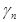
принимаются такими же, как для возводимого
на нем сооружения.
(Измененная редакция. Изм. № 1).
1.5. Расчеты
оснований гидротехнических сооружений следует производить по двум группам
предельных состояний.
Расчеты по первой группе должны выполняться с целью
недопущения следующих предельных состояний:
потери основанием несущей способности, а сооружением -
устойчивости;
нарушений общей фильтрационной прочности нескальных
оснований, а также местной фильтрационной прочности скальных и нескальных
оснований в тех случаях, когда они могут привести к появлению сосредоточенных
водотоков, локальным разрушениям основания и другим последствиям, исключающим
возможность дальнейшей эксплуатации сооружения;
нарушений противофильтрационных устройств в основании
или их недостаточно эффективной работы, вызывающих недопустимые потери воды из
водохранилищ и каналов или подтопление и заболачивание территорий, обводнение
склонов и т. д.;
неравномерных перемещений различных участков
основания, вызывающих разрушения отдельных частей сооружений, недопустимые по
условиям их дальнейшей эксплуатации (нарушение ядер, экранов и других
противофильтрационных элементов земляных плотин и дамб, недопустимое раскрытие
трещин бетонных сооружений, выход из строя уплотнений швов и т.п.).
По предельным состояниям первой группы следует также
выполнять расчеты прочности и устойчивости отдельных элементов сооружений, а
также расчеты перемещений конструкций, от которых зависит прочность или
устойчивость сооружения в целом или его основных элементов (например, анкерных
опор шпунтовых подпорных стен).
Расчеты по второй группе должны выполняться с целью
недопущения следующих предельных состояний:
нарушений местной прочности отдельных областей
основания, затрудняющих нормальную эксплуатацию сооружения (повышения
противодавления, увеличения фильтрационного расхода, перемещений и наклона
сооружений и др.);
потери устойчивости склонов и откосов, вызывающих
частичный завал канала или русла, входных отверстий водоприемников и другие
последствия;
проявлений ползучести и трещинообразования грунта.
Примечание. 1. Если потеря устойчивости
склонов может привести сооружение в состояние, непригодное к эксплуатации,
расчеты устойчивости таких склонов следует производить по предельным состояниям
первой группы.
2. При наличии соответствующих данных рекомендуется
использовать вероятностные методы расчетов.
(Измененная редакция. Изм. № 1).
1.6. При проектировании оснований сооружений I-III классов
необходимо предусматривать установку контрольно-измерительной аппаратуры (КИА)
для проведения натурных наблюдений за состоянием сооружений и их оснований как
в процессе строительства, так и в период их эксплуатации для оценки надежности
системы сооружение - основание, своевременного выявления дефектов,
предотвращения аварий, улучшения условий эксплуатации, а также для оценки
правильности принятых методов расчета и проектных решений. Для сооружений IV
класса и их оснований, как правило, следует предусматривать визуальные наблюдения.
Примечания: 1. Для портовых сооружений III класса при обосновании установку КИА допускается не
предусматривать.
2. Установка
КИА на сооружениях IV класса и их основаниях
допускается при обосновании в сложных инженерно-геологических условиях и при
использовании новых конструкций сооружений.
1.7. Состав
и объем натурных наблюдений должны назначаться в зависимости от класса
сооружений, их конструктивных особенностей и новизны проектных решений,
геологических, гидрогеологических, геокриологических, сейсмических условий,
способа возведения и требований эксплуатации. Наблюдениями, как правило,
следует определять:
осадки, крены и горизонтальные смещения сооружения и
его основания;
температуру грунта в основании;
пьезометрические напоры воды в основании сооружения;
расходы воды, фильтрующейся через основание
сооружения;
химический состав, температуру и мутность
профильтровавшейся воды в дренажах, а также в коллекторах;
эффективность работы дренажных и противофильтрационных
устройств;
напряжения и деформации в основании сооружения;
поровое давление в основании сооружения;
сейсмические воздействия на основание.
Для сооружений IV класса инструментальные наблюдения,
если они предусмотрены проектом, допускается ограничить наблюдениями за
фильтрацией в основании, осадками и смещениями сооружения и его основания.
1.8. При проектировании оснований гидротехнических
сооружений должны быть предусмотрены инженерные мероприятия по охране
окружающей среды, в том числе по защите окружающих территорий от затопления и
подтопления, от загрязнения подземных вод промышленными стоками, а также по
предотвращению оползней береговых склонов и других негативных процессов.
(Измененная редакция. Изм. № 1).
2.1.
Номенклатуру грунтов оснований гидротехнических сооружений и их
физико-механические характеристики следует устанавливать согласно требованиям ГОСТ 25100-95,
СНиП
2.02.01-83* и с учетом указаний настоящего раздела.
Значения физико-механических характеристик грунтов,
приведенные в ГОСТ 25100-82, в табл. 1 и в рекомендуемом приложении 1, следует
рассматривать как классификационные. На основе их сравнения с нормативными
значениями характеристик по предварительным (начальным) результатам испытаний
следует устанавливать принадлежность грунта к тому или иному классу и
подгруппе. По этим данным следует производить оценку общих
инженерно-геологических условий строительства и устанавливать состав и методы
определения характеристик и расчетов оснований. При этом для сильнодеформируемых
[при Е < 1·103 МПа (10·103
кгс/см2)], легковыветриваемых, сильно-трещиноватых, размокающих и
набухающих под воздействием воды полускальных грунтов следует применять состав
и методы определения их физико-механических характеристик и расчетов,
соответствующие как скальным, так и нескальным грунтам.
2.2.
Инженерно-геологические условия строительства должны конкретизироваться и
детализироваться путем построения инженерно-геологических и геомеханических
(расчетных или физических) моделей (схем) основания с установлением для
различных зон нормативных и расчетных характеристик физико-механических свойств
грунтов.
2.3. Для
проектирования оснований гидротехнических сооружений в необходимых случаях
надлежит определять дополнительно к предусмотренным СНиП
2.02.01-83* следующие физико-механические характеристики грунтов:
коэффициент фильтрации k;
удельное водопоглощение q;
показатели фильтрационной прочности грунтов (местный и
осредненный критические градиенты напора 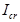
и 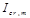
и критические скорости фильтрации 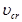
;
коэффициент уплотнения a;
содержание водорастворимых солей;
параметры ползучести 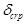
и 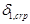
;
параметры трещин (модуль трещиноватости Мj, углы падения и простирания 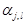
, длину , ширину
раскрытия 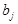
);
параметры заполнителя трещин (степень заполнения,
состав, характеристики свойств);
скорости распространения продольных и поперечных 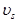
волн в массиве;
коэффициент морозного пучения Кh;
удельную нормальную и касательную силы пучения 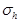
и 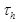
;
предел прочности отдельности (элементарного породного
блока) скального грунта на одноосное сжатие Rс;
предел прочности отдельности скального грунта на
одноосное растяжение Rt;
Таблица 1
|
Классификационная
характеристика грунтов основания
|
Физико-механические
характеристики грунтов
|
|
плотность сухого
грунта (в массиве) -, т/м3
|
коэффициент
пористости (в массиве), е
|
сопротивление
одноосному paстяжению породных блоков в
водонасыщенном состоянии 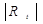 , МПа (кгс/см2)
|
модуль деформации
грунта (в массиве) Е, 103 МПа (103 кгс/см2)
|
|
А. Скальные
|
|
|
|
|
|
Скальные [при пределе прочности
на одноосное сжатие отдельности Rс ³ 5 МПа (50 кгс/см2)]:
магматические (граниты, диориты, порфириты и др.); метаморфические (гнейсы,
кварциты, кристаллические сланцы, мраморы и др.); осадочные (известняки,
доломиты, песчаники и др.)
|
От 2,5 до 3,1
|
Менее 0,01
|
1 (10) и более
|
Св. 5 (50)
|
|
Полускальные [при Rс < 5 МПа (50 кгс/см2)]:
осадочные (глинистые, сланцы, аргиллиты, алевролиты, песчаники, конгломераты,
мелы, мергели, туфы, гипсы и др.)
|
От 2,2 до 2,65
|
Менее 0,2
|
Менее 1 (10)
|
От 0,1 до 5 (от 1
до 50)
|
|
Б. Нескальные
|
|
|
|
|
|
Крупнообломочные (валунные,
галечниковые, гравийные); песчаные
|
От 1,4 до 2,1
|
От 0,25 до 1
|
--
|
От 0,005 до 0,1 (от
0,05 до 1)
|
|
Пылевато-глинистые (супеси,
суглинки и глины)
|
От 1,1 до 2,1
|
От 0,35 до 4
|
-
|
От 0,003 до 0,1 (от
0,03 до 1)
|
предел прочности массива скального грунта на смятие 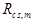
;
то же, на одноосное сжатие 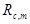
;
то же, на одноосное растяжение 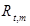
;
коэффициент упругой водоотдачи грунта 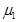
;
коэффициент гравитационной водоотдачи грунта 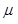
.
сопротивление недренированному сдвигу su;
липкость L;
коэффициент трения на контакте сооружения с грунтом tg js.
(Измененная редакция. Изм. № 1).
При необходимости должны определяться и другие
характеристики грунтов.
Физико-механические характеристики грунта должны
определяться для инженерно-геологических элементов основания, которыми могут
быть выделенные (при составлении инженерно-геологических моделей, при
разработке расчетных схем или геомеханических моделей) квазиоднородные области
основания или некоторые квазиоднородные элементы этих областей (например,
выделенные области массива скального грунта или отдельности скального грунта,
его трещины, контактные поверхности с другими областями основания или
сооружения).
Однородность условий определения физико-механических
характеристик должна оцениваться на основе анализа инженерно-геологических
данных и на основе статистической проверки.
Нормативные и расчетные значения tg , с, Rс, Rt, Rс,m, Rt,m, Rcs,m, E (модуля
деформации),
, с, Rс, Rt, Rс,m, Rt,m, Rcs,m, E (модуля
деформации), 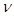
(коэффициента
поперечной деформации), a, , 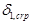
, , , k,
q, 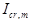
, , , и 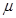
должны устанавливаться в соответствии с
требованиями настоящих норм, а остальных характеристик - в соответствии с
требованиями СНиП 2.02.01-83* и государственных
стандартов на определение соответствующих характеристик.
2.4.
Физико-механические характеристики грунтов необходимо определять с целью
использования их значений при классификации грунтов основания, при определении
с помощью функциональных или корреляционных зависимостей одних показателей
через другие и при решении регламентированных п. 1.2 задач проектирования
основания.
При классификации грунтов применяются нормативные
значения характеристик, при решении задач проектирования - их расчетные
значения.
2.5.
Нормативные значения характеристик грунтов Хn должны устанавливаться на основе результатов полевых и лабораторных
исследований, проводимых в условиях, максимально приближенных к условиям работы
грунта в рассматриваемой системе сооружение - основание. За нормативные
значения всех характеристик следует принимать их средние статистические
значения.
Расчетные значения характеристик грунтов Х должны
определяться по формуле
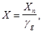
(1)
где
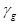
-
коэффициент надежности по грунту.
Примечания: 1. В оговоренных ниже
случаях расчетные значения характеристик могут определяться по табличным или
аналоговым данным.
2. Расчетные значения характеристик грунтов tg, с,  и R для расчетов по предельным состояниям первой группы
обозначаются tg
и R для расчетов по предельным состояниям первой группы
обозначаются tg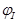
, сI,
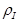
и RI,
второй группы - tg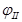
, сII,
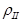
и RII..
2.5 (1). При
проектировании системы сооружение-основание следует учитывать возможное
изменение фильтрационных характеристик, характеристик прочности и деформируемости
грунтов в процессе возведения и эксплуатации сооружения, связанное с ведением
строительных работ, изменением гидрогеологического режима, воздействием
атмосферных факторов, изменением напряженно-деформированного состояния
основания, искусственным регулированием физико-механических характеристик
грунтов и реологическими свойствами грунтов.
Для районов распространения вечномерзлых грунтов
следует также учитывать изменение температурного режима основания, приводящее к
изменению указанных характеристик и теплофизических свойств грунтов.
(Введен дополнительно. Изм. № 1).
2.6. Нормативные значения характеристик tg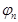
и сn следует определять
по совокупности парных значений нормальных и предельных касательных напряжений,
полученных методом среза (сдвига), или парных предельных значений максимальных
и минимальных главных напряжений, полученных методом трехосного сжатия.
Метод трехосного сжатия должен, как правило,
применяться для пылевато-глинистых грунтов с показателем текучести IL > 0,5, в том числе для получения характеристик в
нестабилизированном состоянии (см. п. 3.13). При обосновании для
определения характеристик в нестабилизированном состоянии допускается
применение метода быстрого среза (сдвига).
Для грунтов всех типов оснований речных
гидротехнических сооружений I класса следует использовать метод трехосного сжатия. Метод
среза для этих случаев допускается применять только при обосновании.
Для грунтов всех типов оснований сооружений I-III классов
дополнительно к испытаниям указанными лабораторными методами, как правило,
следует проводить также испытания в полевых условиях методом сдвига штампов
(для бетонных и железобетонных сооружений), методом сдвига грунтовых целиков
(для грунтовых сооружений), а также допускается проводить испытания методами
зондирования и вращательного среза (для всех видов сооружений). Испытания всеми
указанными методами и определение по их результатам нормативных значений
характеристик tgи сn следует проводить для условий,
соответствующих всем расчетным случаям в периоды строительства и эксплуатации
сооружения.
Нормативные значения характеристик tgи сn по результатам
испытаний методами среза (сдвига) и трехосного сжатия следует определять в
соответствии с обязательным приложением 2.
Нормативные значения характеристик tgи сn при применении
методов вращательного среза или зондирования следует принимать равными средним
арифметическим частных значений этих характеристик.
При получении методами среза (сдвига) для каждого
фиксированного значения нормального напряжения не менее шести значений
предельных касательных напряжений нормативные значения характеристик грунтов
ненарушенной структуры tgи сn наряду с
указанным выше способом допускается определять также методом, основанным на
использовании корреляционных зависимостей, которые должны устанавливаться между
предельными касательными напряжениями (при фиксированных нормальных
напряжениях) и физическими характеристиками грунта с помощью статистической
обработки результатов испытаний. Нормативные значения tgи сn при
использовании этого метода следует определять по зависимости между нормальными
и предельными касательными напряжениями, отвечающей наименее благоприятному из
имевших место в опытах значению физической характеристики.
2.7. Расчетные значения характеристик tgи сI при
использовании результатов испытаний, проведенных любым из указанных в п. 2.6 методов, следует вычислять по формуле (1), определяя коэффициент надежности по грунту в
соответствии с обязательным приложением 2
при односторонней доверительной вероятности = 0,95 (за исключением случаев,
когда нормативные значения tg и сn
получены указанным в п. 2.6
способом с использованием корреляционных зависимостей).
Если полученное таким образом значение будет более
1,25 (для илов - 1,4) или менее 1,05, то его необходимо принимать
соответственно равным = 1,25 (для илов - 1,4) или = 1,05.
Расчетные значения характеристик tg и сII следует
принимать равными нормативным [т. е. в формуле (1) принимать 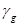
= 1].
Если нормативные значения характеристик tg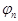
и сn были определены по указанному в п. 2.6 методу с использованием
корреляционных зависимостей, то расчетные значения характеристик tg и сI или tg и сII следует вычислять по формуле (1),
полагая соответственно = 1,25 (для илов - 1,4) или = 1.
Полученные таким образом значения tg и сI или tg и сII принимаются
окончательно за расчетные в том случае, если они в рассматриваемом диапазоне
напряжений (или на его части) обеспечивают большие значения расчетных
предельных касательных напряжений, чем значения tg и сI или tg и сII,
полученные указанным ранее способом (без использования корреляционных
зависимостей).
Для оснований портовых сооружений III и
IV классов при обосновании значения tg и сI
допускается определять с использованием результатов испытаний аналогичных
грунтов в зависимости от их минералогического и зернового состава, коэффициента
пористости и показателя текучести, применяя методику, изложенную в обязательном
приложении
2.
2.7 (1).
Нормативные значения статического сопротивления недренированному сдвигу su,n следует определять как средние арифметические частных
значений этой характеристики, полученных из отдельных испытаний методом
трехосного нагружения или скашивания (многоплоскостного сдвига) образцов грунта
по схеме неконсолидированно-недренированного испытания с доведением образца до
разрушения. Расчетные значения сопротивления недренированному сдвигу su,I определяют в соответствии
с указаниями ГОСТ
20522-96 при односторонней доверительной вероятности a = 0,95. Расчетные значения su,II принимают
равными нормативным значениям su,n.
Динамическое сопротивление недренированному сдвигу 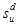
определяют при совместном действии
статических и динамических нагрузок. Нормативные значения 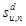
следует определять как средние
арифметические сумм частных значений статической и предельной динамической
составляющих максимальных касательных напряжений при предельном значении числа
циклов. Расчетные значения 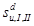
определяют так
же, как расчетные значения 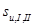
.
(Введен дополнительно. Изм. № 1).
2.8.
Нормативные значения модуля деформации Е и коэффициента уплотнения аn нескальных
грунтов следует определять по результатам компрессионных испытаний или
испытаний методом трехосного сжатия с учетом их напряженно-деформированного
состояния. При использовании метода трехосного сжатия следует выполнять
требования ГОСТ
12248-96. При использовании метода компрессионных испытаний следует
выполнять указания п. 7.7. Значения Еn и an должны определяться как средние арифметические
частных значений этих характеристик, полученных в отдельных испытаниях, или как
значения, устанавливаемые по осредненным зависимостям измеряемых в опытах
величин.
Расчетные значения модуля деформации E
и коэффициента уплотнений а следует принимать равными нормативным.
Для оснований сооружений II-IV
классов расчетные значения Е допускается принимать по таблицам,
приведенным в СНиП 2.02.01-83*, с введением коэффициента
тc,
принимаемого по обязательному приложению 3.
2.9.
Нормативные значения коэффициентов поперечной деформации 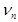
рекомендуется определять
по результатам испытаний методом трехосного сжатия. Значения по результатам
испытаний следует определять как средние арифметические частных значений этой
характеристики, полученных в отдельных испытаниях, или как значения,
устанавливаемые по осредненным зависимостям измеряемых в опытах величин.
Расчетные значения коэффициента поперечной деформации v следует
принимать равными нормативным.
Расчетные значения коэффициента v при
обосновании допускается принимать по табл. 2.
Таблица 2
|
Грунты
|
Коэффициент
поперечной деформации v
|
|
Глины при:
|
|
|
IL < 0
|
0,20-0,30
|
|
0 < IL £ 0,25
|
0,30-0,38
|
|
0,25 < IL £ 1
|
0,38-0,45
|
|
Суглинки
|
0,35-0,37
|
|
Пески и супеси
|
0,30-0,35
|
|
Крупнообломочные грунты
|
0,27
|
|
Примечание. Меньшие значения v
принимаются при большей плотности грунта.
|
2.10.
Нормативные значения параметров ползучести 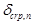
и 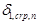
определяются как
средние арифметические частных значений этих характеристик 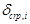
и 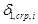
, полученных
для расчетов осадок по результатам компрессионных испытаний и для расчетов
горизонтальных смещений по результатам сдвиговых испытаний. При этом испытания
должны проводиться с фиксацией деформаций во времени на каждой ступени
нагрузки. Частные значения и следует определять исходя из
зависимости
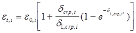
, (2)
где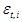
- частные значения деформации
компрессионного сжатия (при компрессионных испытаниях) или деформации сдвига
(при сдвиговых испытаниях) в момент времени t;
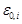
-
частные значения мгновенной деформации компрессионного сжатия (при
компрессионных испытаниях) или деформации сдвига (при сдвиговых испытаниях).
Расчетные значения 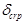
и 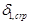
следует принимать
равными нормативным.
2.11. За
нормативное значение коэффициента фильтрации kn
следует принимать среднее арифметическое частных значений коэффициента
фильтрации грунта, определяемых путем испытаний его на водопроницаемость в
лабораторных или полевых условиях с учетом структурных особенностей основания
(в том числе возникающих после возведения сооружения). Например, при резко
выраженной фильтрационной анизотропии грунта, когда его водопроницаемость
изменяется в зависимости от направления более чем в 5 раз, необходимо
определять коэффициенты фильтрации по главным осям анизотропии, указывая при
этом ориентировку этих осей в пространстве.
Расчетные значения коэффициента фильтрации k
следует принимать равными нормативным.
Примечание. Для портовых сооружений и речных сооружений III и IV классов расчетные значения коэффициентов фильтрации
грунтов основания допускается определять по аналогам, а также расчетом,
используя другие физико-механические характеристики грунтов.
2.12. Расчетные значения осредненного критического
градиента напора Icr,m в основании сооружения с
дренажем следует принимать по табл. 3.
Таблица 3
|
Грунт
|
Расчетный
осредненный критический градиент напора Icr,m
|
|
Песок:
|
|
|
мелкий
|
0,32
|
|
средней крупности
|
0,42
|
|
крупный
|
0,48
|
|
Супесь
|
0,60
|
|
Суглинок
|
0,80
|
|
Глина
|
1,35
|
Расчетные значения местного критического градиента
напора Icr следует
определять, используя расчетные методы оценки суффозионной устойчивости грунтов
либо путем испытаний грунтов на суффозионную устойчивость в лабораторных или
натурных условиях.
Для несуффозионных песчаных грунтов Icr допускается принимать при выходе потока в дренаж 1,0,
а за дренажем - 0,3. Для пылевато-глинистых грунтов при наличии дренажа или
жесткой пригрузки при выходе на поверхность грунта Icr
допускается принимать 1,5, а при деформируемой пригрузке - 2,0.
2.13. Нормативные значения коэффициентов упругой и
гравитационной водоотдачи 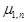
и 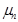
следует определять в натурных условиях по
результатам наблюдений за изменением напоров и уровней воды в
инженерно-геологическом элементе основания при изменении напора в определенной
точке (например, в опытной скважине).
Расчетные значения коэффициентов и следует принимать
равными нормативным.
Примечание. Значения и оснований сооружений II-IV классов
допускается определять по результатам испытаний в лабораторных условиях.
2.14. Нормативные значения предела прочности отдельности
скального грунта на одноосное сжатие Rt,n и
одноосное растяжение Rc,n, а
также предела прочности массива скального грунта на смятие Rcs,m,n, одноосное растяжение Rt,m,n и одноосное сжатие Rc,m,n следует определять как средние арифметические частных значений этих
характеристик, полученных в отдельных испытаниях.
Методы проведения испытаний и обработки результатов
для получения частных значений характеристики Rcs,m
приведены в рекомендуемом приложении 4.
Частные значения характеристик Rс и Rt рекомендуется определять соответственно методами одноосного
сжатия и растяжения образцов отдельностей в лабораторных условиях.
Частные значения характеристик Rc,m и Rt,m следует, как правило, определять
экспериментально в полевых условиях. Испытания для определения Rc,m рекомендуется проводить методом
одноосного сжатия скальных целиков, а для определения Rt,m - методом отрыва бетонных штампов или скальных целиков
по контакту бетон - скала, по массиву или трещинам в условиях одноосного
растяжения.
Расчетные значения характеристик прочности 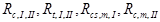
и 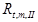
следует
определять по формуле
(1). При этом коэффициент надежности по грунту для
характеристики RII необходимо
принимать =
1, а для характеристики RI он
должен определяться в соответствии с требованиями ГОСТ
20522-96 при односторонней доверительной вероятности = 0,95.
При обосновании расчетные значения в направлениях, не
совпадающих с нормалями к плоскостям трещин, допускается принимать по табл. 4,
а в направлениях, совпадающих с нормалями к плоскостям сплошных трещин,
принимать равными нулю.
2.15.
Нормативные значения характеристик tg и сn массивов скальных грунтов
следует определять для всех потенциально опасных расчетных поверхностей или элементарных
площадок сдвига по результатам полевых или лабораторных (в том числе модельных)
испытаний, проводимых методом среза (сдвига) бетонных штампов или скальных
целиков.
Испытания указанными методами и определение по их
результатам нормативных значений характеристик tgи сn следует
производить для условий, соответствующих всем расчетным случаям в периоды
строительства и эксплуатации сооружения.
Нормативные значения характеристик tg и сn должны
определяться в соответствии с обязательным приложением 2.
2.16. Расчетные значения характеристик tg и сI скальных
грунтов следует вычислять по формуле (1). При этом коэффициенты надежности по грунту 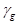
следует
устанавливать в соответствии с обязательным приложением 2 при односторонней доверительной вероятности = 0,95. Если
полученное при этом значение будет более 1,25 или менее 1,05, то его
следует принимать соответственно равным 1,25 или 1,05.
Расчетные значения характеристик tg и сII следует
принимать равными нормативным.
Примечания: 1. Для определения расчетных
значений характеристик tg и сI по результатам испытаний при обосновании можно
использовать метод линейной аппроксимации нижней доверительной границы
зависимости между нормальными и предельными касательными напряжениями,
полученной при = 0,95 с использованием усеченного
распределения измеренных величин.
2. При
определении расчетных характеристик tg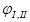
и сI,II по
экспериментальным данным необходимо учитывать возможное несоответствие между
условиями проведения испытаний и натурными условиями.
3. Для
оснований сооружений III и IV классов, а также для
оснований сооружений I и II классов на стадии
технико-экономического обоснования строительства расчетные значения
характеристик tg и сI,II при обосновании допускается принимать по табл. 4
(с использованием аналогов, корреляционных связей и т.д.). Значения tg
и сI,II
для оснований сооружений I и II классов на стадиях
проекта и рабочей документации также при обосновании допускается принимать по табл. 4,
если расчеты с использованием этих характеристик не определяют габариты сооружений.
2.17.
Нормативные значения характеристик деформируемости массивов скальных грунтов
(модуля деформации Еn, коэффициента поперечной деформации , скоростей
распространения продольных и поперечных волн и др.) следует определять как
средние арифметические частных значений этих характеристик, полученных для
данного инженерно-геологического элемента в отдельных испытаниях. Нормативные
значения Еn и допускается также определять исходя из
корреляционной зависимости между статической (Еn) и динамической ( или ) характеристиками, установленной при
сопоставлении частных сопряженных значений этих характеристик, полученных в
одних и тех же точках массива, расположенных в разных инженерно-геологических
элементах исследуемого основания. При этом испытания для получения частных
значений Еn и должны проводиться методами статического
нагружения массива скального грунта, а для получения частных значений или - динамическими
(сейсмоакустическими или ультразвуковыми) методами.
Для оснований сооружений III и IV
классов, а также для оснований сооружений I и II классов на стадии
технико-экономического обоснования строительства при определении нормативных
значений Еn корреляционную зависимость с динамическими
характеристиками допускается при обосновании принимать на основе обобщения
данных испытаний для аналогичных инженерно-геологических условий.
2.18.
Расчетные значения модуля деформации Е, если они используются в расчетах
местной прочности основания, должны определяться по формуле (1). При этом
коэффициент надежности по грунту , если нормативное значение Еn установлено как среднее арифметическое частных значений, должен
определяться в соответствии с требованиями ГОСТ
20522-96 при
односторонней доверительной вероятности = 0,85. Из полученных двух значений должно
приниматься меньшее. Если значение Еn установлено по корреляционным
зависимостям с динамическими показателями, следует принимать = 0,8.
Расчетные значения Е, если они используются в
расчетах устойчивости, в расчетах основания по деформациям и в расчетах
прочности сооружения, следует принимать равными нормативным.
При обосновании расчетные значения модуля деформации
скальных массивов Е допускается определять на основе аналоговых
корреляционных связей этой характеристики с характеристиками других свойств -
водопроницаемостью, воздухопроницаемостью и др. При этом характеристики других
свойств должны быть установлены по результатам испытаний в изучаемом скальном
массиве.
Расчетные значения коэффициента поперечной деформации v
следует принимать равными нормативным.
При обосновании расчетные значения v массивов
скального грунта допускается определять по аналогам.
2.19.
Нормативные значения коэффициента фильтрации kn и удельного
водопоглощения qn следует
определять как средние арифметические значений результатов, полученных при
испытаниях, выполненных одинаковым методом в соответствии с ГОСТ 23278-78. В
сложных гидрогеологических условиях (резко выраженная анизотропия
фильтрационных свойств, карст, неопределенность граничных условий и др.)
нормативное значение kn следует определять по результатам испытаний в кусте
скважин.
Испытания по определению kn
и qn необходимо проводить с учетом напряженного состояния
грунта в изучаемой зоне основания.
Расчетные значения коэффициента фильтрации k и
удельного водопоглощения q следует принимать равными нормативным.
2.20. Нормативные значения критической скорости движения
воды в трещинах (прослойках, тектонических зонах дробления) , как правило, следует
определять по результатам суффозионных испытаний заполнителя трещин (прослоек,
зон дробления).
Расчетные значения следует принимать равными
нормативным.
Для оснований сооружений III и IV классов,
а при обосновании - и для оснований сооружений I и II классов
расчетные значения допускается определять расчетом в
зависимости от геометрических характеристик трещин, вязкости фильтрующейся воды
и физико-механических характеристик заполнителя трещин.
Расчетные значения (равные нормативным) критического
градиента напора фильтрационного потока в направлении
простирания рассматриваемой системы трещин следует определять расчетом в
зависимости от геометрических характеристик трещин, вязкости воды и
физико-механических характеристик заполнителя трещин.
2.21.
Нормативные и расчетные значения коэффициентов упругой и гравитационной
водоотдачи и
следует
определять в соответствии с п. 2.13 только по результатам испытаний в
натурных условиях.
2.22. Массивы
скальных грунтов по степени трещиноватости, водопроницаемости, деформируемости,
выветрелости, по нарушению сплошности и показателю качества RQD
характеризуются данными, приведенными в рекомендуемом приложении 1.
2.23. По
деформируемости и прочности в различных направлениях массивы скальных грунтов
следует считать изотропными при коэффициенте анизотропии не более 1,5 и
анизотропными при коэффициенте анизотропии более 1,5. Под коэффициентом
анизотропии понимается отношение большего значения характеристики к меньшему в
двух заданных направлениях.
3.1. Критерием обеспечения устойчивости сооружения,
системы сооружение - основание и склонов (массивов) является условие
(3)
где F, R
- расчетные значения соответственно
обобщенных сдвигающих сил и сил предельного сопротивления или моментов сил,
стремящихся повернуть (опрокинуть) и удержать сооружение;
- коэффициент условий работы, определяемый по
указаниям СНиП
33-01-2003;
- коэффициент надежности по
степени ответственности сооружения, по указаниям СНиП 33-01-2003.
Примечания: 1. При расчете устойчивости
скальных склонов и откосов по предельным состояниям второй группы  и следует
принимать равными единице.
и следует
принимать равными единице.
2. Устойчивость плотин из грунтовых материалов следует рассчитывать в
соответствии с требованиями СНиП 2.06.05-84*.
(Измененная редакция. Изм. № 1).
Таблица 5
|
Типы
сооружений и оснований
|
Коэффициент
условий работы
|
|
Бетонные и железобетонные
сооружения на полускальных и нескальных основаниях (кроме портовых
сооружений)
|
1,0
|
|
То же, на скальных основаниях
(кроме арочных плотин и портовых сооружений) для расчетных поверхностей
сдвига:
|
|
|
а) приуроченных к трещинам
|
1,0
|
|
б) не приуроченных к трещинам
|
0,95
|
|
Арочные плотины и другие
распорные сооружения на скальных основаниях
|
0,75
|
|
Портовые сооружения
|
1,15
|
|
Откосы и склоны
|
1,0
|
|
Примечание. В необходимых случаях кроме
приведенных в табл. 5
коэффициентов принимаются дополнительные коэффициенты условий работы,
учитывающие особенности конструкций сооружений и их оснований.
|
3.2. При
определении расчетных нагрузок коэффициенты надежности по нагрузкам следует
принимать согласно требованиям СНиП 33-01-2003.
Примечания: 1. Коэффициенты надежности по
нагрузкам следует принимать одинаковыми (повышающими или понижающими) для всех
проекций расчетной нагрузки.
2. Bсe нагрузки от грунта (вертикальное
давление от веса грунта, боковое давление грунта) следует, как правило, определять по расчетным
значениям характеристик грунта , принимая при этом коэффициенты надежности
по нагрузкам равными единице.
3.3. Расчеты
устойчивости сооружений и грунтовых массивов следует, как правило, производить
методами, удовлетворяющими всем условиям равновесия в предельном состоянии.
Допускается применять и другие методы расчета,
результаты которых проверены опытом проектирования, строительства и
эксплуатации сооружений.
В расчетах устойчивости следует рассматривать все
физически и кинематически возможные схемы потери устойчивости сооружений,
систем сооружение - основание и склонов (массивов).
Примечания: 1. Расчеты следует выполнять
для условий плоской или пространственной задачи. При этом условия
пространственной задачи принимают, если l < 3b или l
< 3h (для шпунтовых
сооружений) или когда поперечное сечение сооружения, нагрузки, геологические
условия меняются по длине l1 < 3b (< 3h) где l и b - соответственно
длина и ширина сооружения, h - высота сооружения
с учетом углубления сооружения или шпунта в грунт основания, l1 - длина участка с постоянными
характеристиками.
2. В расчетах
устойчивости для условий пространственной задачи необходимо учитывать силы
трения и сцепления по боковым поверхностям сдвигаемого массива грунта и
сооружения. При этом следует, как правило, давление на боковые поверхности
принимать равным давлению покоя, определяемому по указаниям СНиП
2.06.07-87.
3.4. В
расчетах устойчивости гравитационных сооружений на нескальных основаниях
следует рассматривать возможность потери устойчивости по схемам плоского,
смешанного и глубинного сдвигов. Выбор схемы сдвига в зависимости от вида
сооружения, классификационной характеристики основания, схемы загружения и
других факторов производится по указаниям пп.3.5, 3.9 и 3.11.
Перечисленные схемы сдвига могут иметь место как при
поступательной форме сдвига, так и при сдвиге с поворотом в плане.
Для сооружений, основанием которых являются
естественные или искусственные откосы или их гребни, необходимо также
рассматривать схему общего обрушения откоса вместе с расположенным на нем
сооружением.
3.5. Расчет устойчивости гравитационных сооружений (кроме
портовых), основания которых сложены песчаными, крупнообломочными, твердыми и
полутвердыми пылевато-глинистыми грунтами, следует производить только по схеме
плоского сдвига при выполнении условия
(4)
В случаях, если основания сложены туго- и
мягкопластичными пылевато-глинистыми грунтами, кроме условия (4) следует выполнять
условия:
(5)
(6)
В формулах (4) - (6):
-
число моделирования;
- максимальное нормальное напряжение в угловой точке
под подошвой сооружения (с низовой стороны);
b - размер
стороны (ширина) прямоугольной подошвы сооружения, параллельной сдвигающей силе
(без учета длины анкерного понура);
-
удельный вес грунта основания, принимаемый ниже уровня воды с учетом ее
взвешивающего действия;
N0 - безразмерное число, принимаемое для плотных песков
равным 1, для остальных грунтов - равным 3. Для всех грунтов оснований
сооружений I и II классов N0, как правило,
следует уточнять по результатам экспериментальных исследований методом сдвига
штампов в котлованах сооружений;
tg - расчетное значение коэффициента сдвига;
tg, с1
- то же, что в п. 2.7;
- среднее нормальное напряжение по подошве сооружения;
-
коэффициент степени консолидации;
k
- коэффициент фильтрации;
е - коэффициент пористости грунта в естественном
состоянии;
t0 - время возведения сооружения;
а - коэффициент уплотнения;
-
удельный вес воды;
h0 - расчетная толщина
консолидируемого слоя, принимаемая для сооружения с шириной подошвы b, на части которой bd
расположен дренаж, равной:
а) для однослойного основания:
при наличии водоупора, залегающего на глубине h1 (h1 £ Нc; Нc - см. п. 7.9),
(7)
при залегании в основании дренирующего слоя на глубине
h1 (h1 £ Нc)
(8)
б) для двухслойного основания с толщинами слоев h1 и h2:
при наличии водоупора и при k1 k2 (h1 + h2 £ Нc)
(9)
при наличии дренирующего слоя на глубине h1 + h2 (h1 + h2 £ Нc)
(10)
Примечание. Указания
настоящего пункта не распространяются на случаи, когда особенности конструкции
сооружения и геологического строения основания, а также распределение нагрузок
предопределяют глубинный сдвиг.
3.6. При
расчете устойчивости сооружения по схеме плоского сдвига за расчетную
поверхность сдвига следует принимать:
при плоской подошве сооружения - плоскость опирания
сооружения на основание с обязательной проверкой устойчивости по горизонтальной
плоскости сдвига, проходящей через верховой край подошвы;
при наличии в подошве сооружения верхового и низового
зубьев: при глубине заложения верхового зуба, равной или большей низового, -
плоскость, проходящую через подошву зубьев, а также горизонтальную плоскость,
проходящую по подошве верхового зуба; при глубине заложения низового зуба более
глубины заложения верхового зуба - горизонтальную плоскость, проходящую по
подошве верхового зуба (при этом все силы следует относить к указанной
плоскости, за исключением пассивного давления грунта со стороны нижнего бьефа,
которое надлежит определять по всей глубине низового зуба);
при наличии в основании сооружения каменной постели
- плоскости, проходящие по контакту сооружения с постелью и постели с грунтом;
при наличии у каменной постели заглубления в грунт следует рассматривать также
наклонные плоскости или ломаные поверхности, проходящие через постель;
для гравитационных сооружений на континентальном
шельфе при наличии в их подошве ребер («юбок» и внутренних ребер) - плоскости,
проходящие в контактной области частично в пределах ребер, частично по контакту
подошвы с грунтом основания;
при наличии в основании зон, слоев или прослоек слабых
грунтов, в том числе в зонах промораживания-оттаивания, следует дополнительно
оценить степень устойчивости сооружения применительно к расчетным плоскостям,
проходящим в этих зонах или слоях.
(Измененная редакция. Изм. № 1).
3.7. При расчете устойчивости сооружений по схеме плоского
сдвига (без поворота) при горизонтальной плоскости сдвига R
= Rpl и F в условии (3) следует определять по формулам:
(11)
(12)
где
Rpl - расчетное
значение предельного сопротивления при плоском сдвиге;
Р - сумма вертикальных
составляющих расчетных нагрузок (включая противодавление);
tg, с1
- характеристики грунта по расчетной
поверхности сдвига, определяемые по указаниям разд. 2;
-
коэффициент условий работы, учитывающий зависимость реактивного давления грунта
с низовой стороны сооружения от горизонтального смещения сооружения при потере
им устойчивости, принимаемый по результатам экспериментальных исследований; при
их отсутствии значение следует принимать: для всех видов
сооружений, кроме портовых, - 0,7, для портовых - 1;
, - соответственно
расчетные значения горизонтальных составляющих силы пассивного давления грунта
с низовой стороны сооружения и активного давления грунта с парковой стороны,
определяемые по указаниям СНиП
2.06.07-87; при определении , ниже уровня воды следует учитывать ее
взвешивающее действие на грунт, а также влияние фильтрационных сил;
Аg - площадь горизонтальной
проекции подошвы сооружения, в пределах которой учитывается сцепление;
Rg - горизонтальная
составляющая силы сопротивления свай, анкеров и т. д.;
F - расчетное значение
сдвигающей силы;
- суммы горизонтальных
составляющих расчетных значений активных сил, действующих соответственно со
стороны верховой и низовой граней сооружения, за исключением активного давления
грунта.
Примечания: 1. В случае наклонной плоскости
сдвига при определении Rpl и F силы проектируются на эту плоскость и на нормаль к ней.
2. Для
вертикально- и наклонно-слоистых оснований tg·и
с1 следует определять по обязательному приложению 5
как средневзвешенные значения характеристик грунтов всех слоев с учетом
перераспределения нормальных контактных напряжений между слоями пропорционально
их модулям деформации.
3. Под
низовой стороной сооружения понимается та, в направлении которой проверяется
возможность сдвига.
4. Для
портовых сооружений I класса величины tg·и
с1 по контакту сооружения с каменной постелью следует
определять по результатам экспериментальных исследований. Для портовых
сооружений II-IV классов, а также I класса на стадии
технико-экономического обоснования строительства допускается принимать по
контакту сооружение - каменная наброска - tg =
0,6, с1 = 0, по поверхности сдвига внутри каменной наброски -
tg = 0,85, с1 = 0.
5. При
наличии постели под сооружением пассивное давление грунта, как правило, следует
определять только ниже подошвы сооружения с учетом веса вышележащего грунта.
3.8. В
случае, если расчетная сдвигающая сила F приложена с эксцентриситетом в
плоскости подошвы еF , расчет устойчивости сооружений следует производить
по схеме плоского сдвига с поворотом в плане (l и b
- размеры сторон прямоугольной подошвы
сооружения). Эксцентриситет еF и силу предельного сопротивления
сдвигу при плоском сдвиге с поворотом Rpl,t следует определять по указаниям,
приведенным в рекомендуемом приложении 6.
3.9. Расчет устойчивости сооружений по схеме смешанного
сдвига следует производить для сооружений
на однородных основаниях во всех случаях, если не соблюдаются условия,
приведенные в п. 3.5. При
этом сопротивление основания сдвигу следует принимать равным сумме сопротивлений
на участках плоского сдвига и сдвига с выпором (черт. 1). Сила предельного сопротивления при расчете
устойчивости сооружений по схеме смешанного сдвига Rcom
при поступательной форме сдвига определяется по формуле
(13)
где
- то
же, что в формуле
(5);
tg·и с1
b1, b2 - расчетные значения ширины участков подошвы сооружения,
на которых происходят сдвиг с выпором и плоский сдвиг;
-
предельное касательное напряжение на участке сдвига с выпором, определяемое в
соответствии с указаниями рекомендуемого приложения 7;
l - размер
стороны прямоугольной подошвы сооружения, перпендикулярной сдвигающей силе.
Черт. 1. Схема к расчету несущей способности основания
и устойчивости сооружения при смешанном сдвиге
аб - участок
плоского сдвига; бе - участок сдвига с выпором; бвгдб - зона
выпора
Значения b1 следует определять в зависимости от smax (с низовой стороны) по черт. 2. При эксцентриситете еp нормальной силы
Р в сторону нижнего бьефа в формуле (13) вместо b,
b1 и b2 следует принимать b¢, b1¢ и b2¢ (где b
= b - 2еp, а );
эксцентриситет в сторону верхнего бьефа в расчетах не учитывается.
Для портовых сооружений и сооружений на
континентальном шельфе расчеты устойчивости по схеме смешанного сдвига
допускается не производить.
(Измененная редакция. Изм. № 1).
Черт. 2. Графики для определения ширины участка
подошвы сооружения b1, на котором происходит сдвиг с выпором
грунта основания
а - для
грунтов с коэффициентом сдвига tg > 0,45; б - то
же, при tgyI < 0,45; -
среднее нормальное напряжение в подошве сооружений, при котором происходит
разрушение основания от одной вертикальной нагрузки ( определяется по
рекомендуемому приложению 5; )
3.10. При
смешанном сдвиге с поворотом в плане предельная сдвигающая сила принимается
равной ,
где -
коэффициент, определяемый по указаниям рекомендуемого приложения 6, - то же, что в формуле (13).
3.11.
Расчет устойчивости сооружений по схеме глубинного сдвига следует производить:
а) для всех типов сооружений, несущих только
вертикальную нагрузку, а для портовых сооружений - независимо от характера
нагрузки;
б) при невыполнении требований п. 3.5 для сооружений,
несущих вертикальную и горизонтальную нагрузки и расположенных на неоднородных
основаниях.
3.12. Расчет
устойчивости гравитационных сооружений (кроме портовых) по схеме глубинного
сдвига допускается производить по рекомендуемому приложению 7.
Расчет устойчивости портовых сооружений, как правило,
следует производить двумя методами, исходя из поступательного перемещения
сдвигаемого массива грунта вместе с сооружением по ломаным плоскостям сдвига и
из вращательного их перемещения по круглоцилиндрической поверхности сдвига в
соответствии с рекомендуемым приложением 8, а при специальном обосновании -
одним из указанных методов.
При использовании обоих методов определяющими являются
результаты расчета устойчивости по тому методу, по которому условие (3)
показывает меньшую надежность сооружения.
3.13. При расчете устойчивости сооружений на основаниях,
сложенных глинистыми грунтами со степенью влажности Sr ³ 0,85 и коэффициентом степени консолидации cv0 < 4 следует
учитывать нестабилизированное состояние грунта основания одним из способов:
- принимая характеристики прочности tg j1 и с1, соответствующие степени консолидации
грунта основания к расчетному моменту (т.е. полным напряжениям), или su,I, и не учитывая при этом в
расчетах наличие избыточного порового давления, обусловленного консолидацией
грунта;
- учитывая по поверхности сдвига действие избыточного
порового давления, возникающего при консолидации грунта (определяемого
экспериментальным или расчетным путем), и принимая характеристики прочности tg j1 и с1, соответствующие полностью
консолидированному состоянию грунта (т.е. эффективным напряжениям).
При расчете устойчивости сооружений на водонасыщенных
нескальных основаниях, воспринимающих кроме статических также динамические
нагрузки, следует учитывать влияние этих нагрузок на несущую способность
грунтов, приводящее к снижению сопротивления недренированному сдвигу связных
грунтов и возникновению избыточного порового давления в несвязных грунтах.
(Измененная редакция. Изм. № 1).
3.14.
Расчеты устойчивости сооружений на скальных основаниях, скальных откосов и
склонов следует выполнять по схеме сдвига по плоским или ломаным расчетным
поверхностям. При этом определяющими являются результаты расчета по той схеме,
которая по условию
(3) показывает меньшую надежность сооружения (откоса, склона).
(Измененная редакция. Изм. № 1).
При плоской расчетной поверхности сдвига следует
учитывать две возможные схемы нарушения устойчивости:
поступательный сдвиг;
сдвиг с поворотом в плане.
При ломаной расчетной поверхности сдвига следует
учитывать три возможные расчетные схемы:
сдвиг вдоль ребер ломаной поверхности (продольный);
сдвиг поперек ребер ломаной поверхности (поперечный);
сдвиг под углом к ребрам ломаной поверхности сдвига
(косой).
Выбор схемы нарушения устойчивости сооружения или
откоса (склона) и определение расчетных поверхностей сдвига следует
производить, используя данные анализа инженерно-геологических структурных
моделей, отражающих основные элементы трещиноватости скального массива (ориентировку,
протяженность, мощность, шероховатость трещин, их частоту и т.д.) и наличие
ослабленных прослоек и областей.
3.15. При
расчете устойчивости сооружений и скальных откосов (склонов) по схеме
поступательного и продольного сдвигов величины, входящие в условие (3),
необходимо определять по формулам:
; (14)
, (15)
где
F, R - то же, что в формуле (3);
Т - активная сдвигающая сила
(проекция равнодействующей расчетной нагрузки на направление сдвига);
Pi - равнодействующая нормальных напряжений (сил),
возникающих на i-м участке поверхности сдвига от расчетных нагрузок;
Rg - сила сопротивления,
ориентированная против направления сдвига, возникающая от анкерных усилий и
т.д.;
п - число участков поверхности
сдвига, назначаемое с учетом неоднородности основания по прочностным и
деформационным свойствам;
, - расчетные
значения характеристик скальных грунтов для i-го участка расчетной
поверхности сдвига, определяемые в соответствии с требованиями п. 2.16;
Ai - площадь i-го участка расчетной поверхности
сдвига;
Ei - расчетная
сила сопротивления упорного массива (обратной засыпки), определяемая по
указаниям п.
3.16.
3.16. Расчетное значение силы сопротивления упорного
массива или обратных засыпок следует определять по формуле
, (16)
где
-
расчетное значение силы пассивного сопротивления.
Для обратных засыпок и упорных массивов без выраженных
поверхностей ослабления определяется по указаниям СНиП
2.06.07-87. Для упорного массива, содержащего поверхности ослабления, по
которым данный массив может быть сдвинут, значение следует определять без учета
характеристик tg и с
по упорной грани по формуле
(17)
где
Q - вес призмы
выпора;
А - площадь поверхности сдвига призмы выпора;
- угол наклона поверхности сдвига (плоскости
ослабления) призмы выпора к горизонту;
, - расчетные значения характеристик грунтов
по поверхности сдвига (выпора);
-
коэффициент условий работы, принимаемый в зависимости от соотношения модулей
деформации грунта упорного массива (обратной засыпки) Еs и основания Ef :
при 0,8 = 0,7;
при 0,1 = ;
при 0,8 >> 0,1 определяется линейной
интерполяцией;
Еr - давление покоя,
определяемое по формуле
, (18)
где
 - удельный
вес грунта упорного массива;
- удельный
вес грунта упорного массива;
v - коэффициент поперечной деформации грунта упорного
массива;
h
- высота упора на контакте с сооружением
или откосом.
Примечания: 1. Сопротивление упорного
массива следует учитывать только в случае обеспечения плотного контакта
сооружения или откоса с упорным массивом.
2. Сила Еp,d
принимается горизонтальной независимо от наклона упорной грани массива.
3.17. При
расчете устойчивости сооружений и скальных откосов (склонов) по схеме сдвига с
поворотом в плане следует учитывать возможное уменьшение сопротивления сдвигу R
против значений сил, устанавливаемых в предположении поступательного движения.
При этом корректировку значений R допускается производить в соответствии
с требованиями рекомендуемого приложения 6.
3.18.
Расчеты устойчивости сооружений и скальных откосов (склонов) по схеме
поперечного сдвига следует производить, как правило, расчленяя призму обрушения
(сдвига) на взаимодействующие элементы.
Расчленение призмы обрушения (сдвига) на элементы
производится в соответствии с характером поверхности сдвига, структурой
скального массива призмы и распределением действующих на нее сил. В пределах
каждого элемента по поверхности сдвига характеристики прочности скального
грунта принимаются постоянными.
Выбор направлений расчленения призмы обрушения на
элементы и расчетного метода следует производить с учетом геологического строения
массива. При наличии пересекающих призму обрушения (сдвига) поверхностей
ослабления, по которым возможно достижение предельного равновесия призмы,
плоскости раздела между элементами следует располагать по этим поверхностям
ослабления.
3.19.
Расчеты устойчивости по схеме косого сдвига следует выполнять в тех случаях,
когда направление смещения массива не совпадает с направлением ребра (ребер)
пересечения плоскостей сдвига, например, при расчетах устойчивости береговых
упоров арочных плотин и подобных массивов.
3.20. (Исключен.
Изм. № 1).
3.21. Для
оценки устойчивости сооружений на скальных основаниях и скальных откосов,
относимых к I классу, при сложных инженерно-геологических условиях в дополнение
к расчету, как правило, следует проводить исследования на моделях.
4. ФИЛЬТРАЦИОННЫЕ РАСЧЕТЫ ОСНОВАНИЙ
4.1. При
проектировании основания гидротехнического сооружения необходимо обеспечивать
фильтрационную прочность грунтов основания, устанавливать допустимые по
технико-экономическим показателям фильтрационные расходы и противодавление
фильтрующейся воды на подошву сооружения. При этом также надлежит определять:
форму свободной поверхности фильтрационного потока
(депрессионной поверхности) и местоположения участков его высачивания;
распределение напора фильтрационного потока главным
образом вдоль подземного контура сооружения, на участках его разгрузки и в
местах сопряжения грунтов, отличающихся фильтрационными свойствами и структурой
порового пространства;
фильтрационный расход на характерных участках
основания;
силовое воздействие фильтрационного потока на массив
грунта основания;
общую и местную фильтрационную прочность грунтов в
основании, причем общую фильтрационную прочность следует оценивать лишь для
нескальных грунтов основания, а местную - для всех классов грунтов.
Примечание. При
выполнении фильтрационных расчетов основания необходимо учитывать
дополнительное обводнение верхних мелкозернистых слоев грунтовой толщи (выше
поверхности депрессии) за счет капиллярного поднятия воды (образования
«капиллярной каймы»).
(Измененная редакция. Изм. № 1).
4.2. Характеристики фильтрационного потока следует
определять путем его моделирования на физических или математических
фильтрационных моделях основания с использованием, как правило, моделей (схем)
основания, отражающих геологическую структуру грунтового массива выделением
наиболее характерных по водопроницаемости и суффозионной устойчивости грунтов
областей, которые попадают в активную область фильтрационного потока. Границы
этих областей следует определять предварительными расчетами, исходя из
намеченных размеров и конфигурации подземного контура сооружения.
4.3.
Критерием обеспечения общей фильтрационной прочности нескального основания
является условие
, (20)
где - расчетное значение осредненного
критического градиента напора, принимаемое по п. 2.12;
-
коэффициент надежности по степени ответственности сооружения, принимаемый по п. 3.1.
Значение для оснований сооружений I и
II классов следует определять по методу удлиненной контурной линии. В отдельных
случаях значения допускается определять и другими
приближенными методами.
4.4. Местную
фильтрационную прочность нескального основания необходимо определять только в
следующих областях основания:
в области выхода (разгрузки) фильтрационного потока из
толщи основания в нижний бьеф, дренажное устройство и т. п.,
в прослойках суффозионно-неустойчивых грунтов;
в местах с большим падением напора фильтрационного
потока, например, при обтекании подземных преград;
на участках контакта грунтов с существенно разными
фильтрационными свойствами и структурой.
Критерием обеспечения местной фильтрационной прочности
нескального основания является условие
, (21)
где - местный градиент
напора в рассматриваемой области основания, определяемый методами, указанными
в. п. 4.2;
- местный критический градиент напора, определяемый по п. 2.12.
4.5.
Критериями обеспечения местной фильтрационной прочности скальных оснований
являются условие
(21), в котором заменяется на и условие
, (22)
где
-
средняя скорость движения воды в трещинах массива основания;
- скорость
фильтрации воды в массиве в направлении простирания выделенной системы трещин;
nj - расчетная пустотность массива, определяемая
наличием в нем полых трещин той же системы при доверительной вероятности их
раскрытия 0,95;
-
критическая скорость движения воды в трещинах, определяемая по п. 2.20;
- критический градиент напора в направлении простирания
рассматриваемой системы трещин, определяемый по п. 2.20.
4.6.
Проектирование подземного контура напорных сооружений должно выполняться в
соответствии с требованиями СНиП 2.06.05-84 *и СНиП
2.06.06-85. При выборе системы дренажа и противофильтрационных устройств в
основании проектируемого сооружения необходимо также учитывать условия его
эксплуатации, инженерно-геологические условия и требования по охране окружающей
среды в части подтопления, заболачивания прилегающей территории, активизации
карстово-суффозионных процессов и т. п.
4.7. При
проектировании противофильтрационной завесы в нескальном основании следует
принимать следующие критические градиенты напора:
в инъекционной завесе в гравийных и галечниковых
грунтах - 7,5; в песках крупных и средней крупности - 6,0 и в мелких песках -
4,0;
в завесе, сооружаемой способом «стена в грунте» в
грунтах с коэффициентами фильтрации до 200 м/сут, в зависимости от материала и
длительности ее эксплуатации - по табл. 6.
Таблица 6
|
Материал
завесы
|
Критический
градиент напора в завесе
|
|
Бетон
|
180
|
|
Глиноцементный раствор
|
125
|
|
Комовая глина
|
40
|
|
Заглинизированный грунт
|
25
|
|
Примечание. Для временных завес
критические градиенты напора допускается увеличивать на 25 %.
|
4.8. При
проектировании противофильтрационной (цементационной) завесы в скальном
основании следует принимать критический градиент напора в завесе в зависимости от
удельного водопоглощения в пределах завесы qс по табл. 7.
В случае, когда завеса (одна или в сочетании с другими
противофильтрационными устройствами) также защищает от выщелачивания
содержащиеся в основании растворимые грунты, допустимое удельное водопоглощение
следует обосновывать расчетами и экспериментальными исследованиями.
Проницаемость противофильтрационной завесы должна быть
ниже проницаемости грунта основания не менее чем в 10 раз.
Таблица 7
4.9. Для
предотвращения выпора грунта на участках, где фильтрационный поток с
градиентами напора, близкими к единице, выходит на поверхность основания, в
проекте необходимо предусматривать проницаемую пригрузку или разгрузочный
дренаж. Материал пригрузки должен подбираться по принципу обратного фильтра для
защиты грунта основания от контактной суффозии.
Для изотропно-проницаемого и однородного основания
необходимая толщина пригрузки (при отсутствии давления на нее сверху)
определяется по формуле
, (23)
где h - разность
пьезометрических уровней для расчетной глубины z в толще
основания и для поверхности грунта основания (z
соответствует заглублению низового шпунта
или зуба);
- удельный вес грунта и пригрузки с учетом
взвешивающего действия воды;
- удельный
вес воды;
- коэффициент
надежности по степени ответственности сооружения, принимаемый по п. 3.1.
5.1. Расчет местной прочности скальных оснований
гидротехнических сооружений следует производить для установления необходимости
разработки мероприятий, предотвращающих возможное нарушение
противофильтрационных устройств, для учета при разработке мероприятий по
повышению прочности и
устойчивости сооружений и для учета достижения предела местной прочности при
расчетах напряженно-деформированного состояния сооружения и основания.
Расчет местной прочности следует производить по
предельным состояниям второй группы только для оснований сооружений I
класса при основном сочетании нагрузок.
5.2. Проверку местной прочности скальных оснований следует
производить по расчетным площадкам:
а) совпадающим с плоскостями, пpиуpoченными к трещинам
в массиве;
б) совпадающим с плоскостью, приуроченной к контакту
сооружение - основание и к контактам скальной породы с укрепительными
конструкциями в основании (шпонками, зубьями, решетками и т.п.);
в) не совпадающим с плоскостями, приуроченными к
трещинам и к контакту сооружение - основание.
(Измененная редакция. Изм. № 1).
5.3.
Критериями обеспечения местной прочности по площадкам, указанным в подпунктах
«а» и «б» п.
5.2, являются условия:
> ; (24)
> 1, (25)
где - отношение предельных
касательных напряжений на расчетной площадке к эксплуатационным;
- соответственно нормальное и касательное
напряжения на расчетной площадке, приуроченной к плоскости трещины (контакта),
от нормативных нагрузок в расчетном сочетании (сжимающим напряжениям
соответствует знак «плюс»);
- соответственно максимальное и минимальное
главные напряжения от тех же нагрузок;
- острый
угол между расчетной площадкой, приуроченной к трещине (контакту), и
направлением главного напряжения ;
- расчетные характеристики для расчетных
площадок, приуроченных к трещинам (контакту), определяемые в соответствии с
требованиями п.
2.16;
- расчетное
значение предела прочности массива скального грунта на одноосное растяжение,
определяемое в соответствии с требованиями п. 2.14.
5.4.
Критериями обеспечения местной прочности по площадкам, указанным в п. 5.2 в,
являются условия:
> ; (26)
> 1, (27)
где - расчетные характеристики для
расчетных площадок, не приуроченных к трещинам и контакту сооружение -
основание, определяемые в соответствии с требованиями п. 2.16.
В случаях, если связь между касательными и нормальными напряжениями на
расчетных площадках, не приуроченных к трещинам и контакту, при определении и и описывается
единой линейной зависимостью с большой погрешностью, необходимо учитывать
возможную нелинейность этой связи путем кусочно-линейной аппроксимации или
использованием нелинейных зависимостей, например, в виде квадратичной параболы . При
использовании квадратичной параболы вместо условия (27) должно выполняться
условие
> 1. (28)
При этом параметры и должны определяться путем
обработки экспериментальных данных методом наименьших среднеквадратичных
отклонений.
Допускается определять параметры c и z по формулам:
(28,а)
(28,б).
(Измененная редакция. Изм. № 1).
5.5. Условия (24)
и (26) следует выполнять во всех указанных в п. 5.1
случаях, а условия
(25) и (27) (или (28)) - в этих же случаях, но только при < 0. Если > 0, то условия (25)
и (27) (или (28))
следует выполнять лишь при оценках прочности основания, производимых при
расчетах напряженно-деформированного состояния основания, и при разработке
мероприятий по повышению прочности и устойчивости сооружения.
При оценке надежности противофильтрационных устройств
(если <
0) проверка выполнения условия (25) для площадок, совпадающих с
плоскостью завес, не производится.
При невыполнении условий местной прочности необходимо
определить очертания зон разуплотнения и пластических деформаций. Зона
разуплотнения не должна пересекать цементационную завесу и дренаж. В противном
случае должны быть выполнены фильтрационные расчеты (см. раздел 4) в нелинейной
постановке с учетом измененного фильтрационного режима. Зона пластических
деформаций не должна охватывать более 1/3 подошвы сооружения или потенциально
опасной расчетной поверхности сдвига.
(Измененная редакция. Изм. № 1).
5.6. При
определении напряжений , , и в условиях (24) - (28) следует применять вычислительные и экспериментальные
методы механики сплошной среды и геомеханики.
Допускается рассматривать основание совместно с
сооружением как систему линейно-деформируемых тел, на контакте между которыми
выполняются условия равновесия и равенства перемещений.
При обосновании допускается схематизация системы
сооружение - основание, позволяющая решать плоскую задачу теории упругости
применительно к одному или к нескольким плоским сечениям. При этом поверхность
основания может быть принята плоской, а тело основания - однородным либо
состоящим из некоторого числа однородных областей, либо имеющим непрерывно
изменяющиеся характеристики. При необходимости следует учитывать естественный
рельеф поверхности основания, пространственный характер работы системы
сооружение - основание, а также детализировать распределение механических
характеристик основания.
Если при определении напряжений (при указанных
предпосылках) в некоторых областях основания одно (или несколько) из условий (24) - (28) не
выполняется, то следует, как правило, производить уточнение решения задачи.
Такое уточнение следует выполнять с использованием нелинейной зависимости между
напряжениями и деформациями или путем изменения геометрии сечения за счет
исключения из рассмотрения указанных областей.
6.1.
Контактные напряжения (нормальные и касательные напряжения по контакту
сооружение - основание) необходимо определять для использования их в расчетах
прочности конструкций и сооружений, а также в расчетах оснований по несущей
способности и деформациям.
При определении контактных напряжений необходимо
учитывать конструктивные особенности сооружения, последовательность возведения
и вид основания.
В целях уменьшения расчетных усилий в конструкциях или
в элементах сооружения при проектировании следует рассматривать возможность
создания оптимального распределения контактных напряжений, предусматривая
устройство выступов на контактных поверхностях сооружений, уплотнение отдельных
зон основания и соответствующую последовательность возведения сооружения.
Примечание. Напряжения на контакте грунта с ограждающими
конструкциями определяются по СНиП 2.06.07-87.
(Измененная редакция. Изм. № 1).
6.2. Для сооружений
на скальных основаниях контактные напряжения следует определять методом
внецентренного сжатия, а в необходимых случаях для сооружений I и
II классов - по результатам расчетов напряженного состояния системы сооружение
- основание с использованием методов механики сплошных сред.
Для сооружений на нескальных основаниях контактные
напряжения следует определять в соответствии с требованиями пп. 6.3-6.11.
6.3. При определении контактных напряжений для сооружений
на нескальных основаниях следует учитывать показатель гибкости сооружения tft, определяемый:
а) при расчете сооружения по схеме плоской деформации:
в направлении длины сооружения
(29)
в направлении ширины сооружения
(30)
б) при расчете сооружения по схеме пространственной
задачи
(31)
В формулах (29) - (31):
v, v1 - коэффициенты Пуассона соответственно грунта основания
и материала сооружения;
Е, E1 - модули соответственно деформации грунта основания и
упругости материала сооружения;
b, l - соответственно ширина и длина подошвы
сооружения;
- моменты инерции расчетных сечений сооружения;
 - ширина расчетного элемента по
длине подошвы сооружения, принимаемая = 1 м;
- ширина расчетного элемента по
длине подошвы сооружения, принимаемая = 1 м;
D
- цилиндрическая жесткость фундаментной
плиты сооружения.
В случаях, когда коэффициент гибкости < 1,
контактные напряжения следует определять как для абсолютно жестких сооружений.
При >
1 (
< 4b/l) контактные напряжения определяются с учетом гибкости
сооружений.
6.4. Для жестких сооружений I и II классов, рассчитываемых по схеме плоской
деформации, нормальные контактные напряжения, как правило, следует определять
методами механики сплошной среды (линейной или нелинейной теории упругости,
теории пластичности). При обосновании эти напряжения для сооружений I и
II классов допускается, а для сооружений III и IV классов
следует определять методом внецентренного сжатия по рекомендуемому приложению
9 или методом коэффициента постели, а
для песчаных оснований с относительной плотностью грунта - методом
экспериментальных эпюр по обязательному приложению 10.
Примечания: 1. При применении методов
теории упругости и теории пластичности допускается принимать основание в виде
сжимаемого слоя конечной толщины, равной для песчаных грунтов 0,3b, для глинистых грунтов 0,5b
(b - ширина подошвы сооружения). Толщину
сжимаемого слоя допускается уточнять при наличии экспериментальных данных.
2. При
получении на участке подошвы сооружения растягивающих контактных напряжений
этот участок должен быть исключен из расчетной контактной поверхности, а на
оставшейся части контактные напряжения должны быть пересчитаны.
6.5. Для
расчетов прочности гидротехнических сооружений эпюры контактных напряжений
следует определять по методам механики сплошной среды, внецентренного сжатия, коэффициента
постели и экспериментальных эпюр. Если полученные при этом изгибающие моменты
имеют разные знаки, то при расчетах моменты уменьшаются на 10 % суммы их
максимальных абсолютных значений, а если одинаковые знаки, то больший
изгибающий момент уменьшается на 10 % разности этих значений.
6.6. При
определении контактных напряжений с учетом гибкости сооружений допускается применять метод коэффициента постели, а
также решения упругих и упругопластических задач. При этом сооружение в
зависимости от его схемы рассматривается как плоская или пространственная
конструкция (балка, плита, рама и т. д.). Гибкость элементов конструкции
следует определять с учетом возможности образования трещин в соответствии с
требованиями СНиП
2.06.08-87.
Примечания: 1. При расчете сложных
пространственных сооружений (зданий ГЭС, голов шлюзов и др.) вместо решения
пространственной задачи допускается использовать решения плоской задачи,
рассматривая независимо два взаимно перпендикулярных направления.
2. Расчет
сооружений в направлении их ширины при наличии в них участков различной
гибкости следует производить с учетом ее переменности.
(Измененная редакция. Изм. № 1).
6.7.
Касательные контактные напряжения, возникающие при действии сдвигающих сил,
следует определять методами, указанными в п. 6.4.
При применении методов коэффициента постели и
внецентренного сжатия касательные напряжения могут приниматься равномерно
распределенными.
Касательные напряжения, обусловленные действием
вертикальных сил, при расчетах прочности сооружений, как правило, не
учитываются.
Примечание. При получении на участке
подошвы сооружения касательных напряжений, превышающих предельные , они должны
быть приняты равными предельным, а на остальных участках они должны быть
пересчитаны.
6.8. Нормальные
контактные напряжения, действующие по подошве сооружений на неоднородных
основаниях, определяются теми же методами, что и для однородных оснований, по
указаниям п.
6.4. При использовании методов теории упругости и теории
пластичности неоднородность грунтов учитывается назначением соответствующих
расчетных характеристик деформируемости и прочности для различных областей
основания.
При определении контактных напряжений методом
внецентренного сжатия учет неоднородности основания следует производить в
соответствии с требованиями пп. 6.9 и 6.10,
а в случае использования методов коэффициента постели и экспериментальных эпюр
- в соответствии с требованиями п. 6.11.
6.9. При
неоднородных основаниях с вертикальными и крутопадающими слоями в расчетах
контактных напряжений могут быть использованы:
а) методы механики сплошной среды, в том числе
численные методы решения задач;
б) приближенные методы, в которых контактные
напряжения следует принимать пропорциональными модулям деформации грунта
каждого слоя в зависимости от их размеров и эксцентриситета приложения нагрузки
с использованием методики, изложенной в обязательном приложении 5. В пределах
каждого слоя распределение контактных напряжений принимается линейным.
6.10.
При наличии в основании слоев переменной толщины или при наклонном залегании слоев в расчетах контактных напряжений
используют:
а) методы механики сплошной среды, в том числе
численные методы;
б) приближенные методы, основанные на приведении
расчетной схемы основания со слоями переменной толщины или при наклонном
залегании слоев к схеме условного основания с вертикально расположенными
слоями.
При горизонтальном расположении слоев грунта
постоянной толщины неоднородность основания может не учитываться.
6.11. При определении нормальных контактных напряжений
методами экспериментальных эпюр и коэффициента постели учет неоднородности
основания следует производить путем сложения ординат эпюр, определенных в
предположении однородных оснований по пп. 6.4 и 6.6, с
ординатами дополнительной эпюры.
Ординаты дополнительной эпюры следует принимать
равными разности ординат эпюр, построенных по методу внецентренного сжатия для
случаев неоднородного и однородного оснований.
7.1. Расчет
оснований сооружений и плотин из грунтовых материалов по деформациям необходимо
производить с целью выбора конструкций систем сооружение-основание, перемещения
которых (осадки, горизонтальные перемещения, крены, повороты вокруг
горизонтальной оси и пр.) ограничены пределами, гарантирующими нормальные
условия эксплуатации сооружения в целом или его отдельных частей и
обеспечивающими требуемую долговечность. При этом прочность и трещиностойкость
конструкции должны быть подтверждены расчетом, учитывающим усилия, которые
возникают при взаимодействии сооружения с основанием.
Расчет по деформациям должен производиться на основные
сочетания нагрузок с учетом характера их действия в процессе строительства и
эксплуатации сооружения (последовательности и скорости возведения сооружения,
графика наполнения водохранилища и т.д.).
Перемещения оснований сооружений, происходящие в
процессе строительства, допускается не учитывать, если они не влияют на
эксплуатационную пригодность сооружения.
7.2. Расчет
по деформациям производится исходя из условия
, (32)
где
S - совместная деформация основания и сооружения
(осадки s, горизонтальные перемещения и, крены i,
повороты вокруг вертикальной оси и др.), определяемая расчетом по указаниям пп. 7.7, 7.8, 7.11-7.14;
Su - предельное значение совместной деформации основания
и сооружения, устанавливаемое по указаниям п. 7.3.
В случаях, оговоренных соответствующими нормами
проектирования сооружений, допускается не производить проверку деформаций по формуле (32),
если средние значения давления под подошвой не превышают расчетного
сопротивления грунта основания R, определенного по СНиП 2.02.01-83* с учетом в
необходимых случаях дополнительных коэффициентов условий работы.
7.3. Предельные значения совместной деформации основания и
сооружения устанавливаются соответствующими нормами проектирования сооружений,
правилами технической эксплуатации оборудования или заданием на проектирование
исходя из необходимости соблюдения:
технологических требований к деформациям сооружения, включая
требования к нормальной эксплуатации оборудования;
требований к прочности, устойчивости и
трещиностойкости конструкций, включая общую устойчивость сооружения.
При назначении необходимо учитывать допускаемую разность
перемещений секций и частей сооружений, не приводящую к нарушению нормальной
работы межсекционных швов, возможность перелива воды через гребень плотины и
нарушения нормальной эксплуатации связанных с сооружением коммуникаций и т. п.
7.4. Расчеты
совместных деформаций следует производить для условий пространственной задачи.
Для сооружений, длина которых превышает ширину более чем в 3 раза, расчеты
допускается производить для условий плоской деформации. В случае, когда ширина
сооружения превышает толщину сжимаемой толщи определенную по указаниям п. 7.9, в
2 раза и более, допускается расчет осадок производить для условий одномерной
(компрессионной) задачи.
7.5. При
расчете по деформациям следует определять для грунтов всех категорий конечные
(стабилизированные) перемещения, соответствующие завершенному процессу
деформирования грунтов основания, а для глинистых грунтов, - кроме того,
значения нестабилизированных перемещений, соответствующих незавершенному
процессу деформирования (при коэффициенте степени консолидации < 4) и
перемещений, обусловленных ползучестью грунтов основания.
Примечание. При сложном геологическом
строении основания (наклонная слоистость, наличие линз, изменение характеристик
деформируемости грунта по глубине и в плане и пр.), при неравномерном
нагружении гибкого сооружения и в других случаях, усложняющих расчет,
рекомендуется использовать численные методы решения (например, метод конечных
элементов (МКЭ)).
При расчете
сооружений III и IV классов допускается осреднение
характеристик деформируемости грунта.
7.6. При
расчете деформаций основания с использованием расчетных схем, не учитывающих
образование и развитие пластических деформаций, среднее давление под подошвой
сооружения р не должно превышать расчетного сопротивления грунта
основания R определенного по указаниям СНиП
2.02.01-83*.
7.7. Конечную осадку сооружений s, расположенных на нескальных основаниях, при среднем
давлении под подошвой сооружений р, меньшем расчетного сопротивления
грунта основания R, следует определять по методу послойного суммирования
в пределах сжимаемого слоя Нc (см.
п.
7.9) по формуле
, (33)
где - дополнительное вертикальное
нормальное напряжение в середине i-го слоя на глубине zi основания от нагрузок и пригрузок (соседние
сооружения, обратные засыпки и пр.) по вертикали, проходящей через центр
подошвы сооружения, определяемое в соответствии с указаниями обязательного приложения 11;
- напряжение в середине i-го слоя на
глубине z от бытового давления на отметке подошвы фундамента;
- удельный
вес грунта, расположенного выше подошвы фундамента;
hi - толщина i-го
слоя грунта;
- модуль деформации i-го слоя
грунта, определяемый по первичной ветви компрессионной кривой в соответствии с
указаниями обязательного приложения 3;
- модуль
деформации i-го слоя грунта, определяемый аналогично по вторичной
ветви компрессионной кривой;
п - число слоев, на которое разбита сжимаемая толща
основания Hс.
- коэффициент,
определяемый в соответствии с указаниями обязательного приложения 3.
Примечание. При определении осадки верха (а
также засыпки пaзух) сооружений следует учитывать кроме
осадки основания (включающей осадку от нагрузки в пределах ширины сооружения и
пригрузки на основание вне ее) осадку от уплотнения и самоуплотнения насыпного
грунта в основании и теле сооружения, а также от суффозии, оттаивания мерзлых
грунтов и пр., определяемые по СНиП 2.02.01-83* и нормам
проектирования соответствующих сооружений.
7.8. При среднем давлении под подошвой сооружения р,
большем расчетного сопротивления грунта
основания R, осадку следует определять численными методами, учитывающими
упругопластический характер деформирования грунтов, пространственное
напряженное состояние, последовательность возведения сооружения. Для
приближенных расчетов осадку допускается определять в соответствии с указаниями
рекомендуемого приложения 12.
7.9. Расчетная глубина сжимаемого слоя основания Нс
определяется: при ширине подошвы сооружения 20 м - по СНиП 2.02.01-83*; при b > 20 м - из
условия равенства на нижней границе слоя вертикальных напряжений от внешней
нагрузки половине
вертикальных напряжений от собственного веса грунта с учетом фильтрационных
сил и взвешивающего действия воды ниже уровня подземных вод. При расположении
нижней границы слоя в грунте с < 5 МПа (50 кгс/см2) или при
залегании такого грунта непосредственно ниже этой границы он включается в
сжимаемую толщу. Нижнюю границу сжимаемого слоя в этом грунте следует
определять исходя из условия .
7.10. Нестабилизированная осадка st к моменту времени t
определяется по формуле
(34)
где
U1, U2 - соответственно степень первичной и вторичной
консолидации грунта;
- параметры
ползучести грунта, которые, как правило, должны определяться по результатам
компрессионных испытаний грунта по дренированной схеме;
s
- конечная осадка, определяемая в
соответствии с п.
7.7.
Степень первичной консолидации U1 определяется по решениям
одномерной, плоской или пространственной задач консолидации. Для сооружений III и
IV классов допускается определять U1 согласно рекомендуемому приложению 13. В случаях,
когда поровое давление можно не учитывать, следует принимать U1 = 1. Необходимость учета порового давления определяется
согласно п.
3.13.
Степень вторичной консолидации U2 определяется по решениям
одномерной, плоской или пространственной задач с учетом свойств ползучести
грунта. Для сооружений III и IV классов допускается определять U2 по формуле
. (35)
7.11.
Крен (наклон) сооружений следует определять от внецентренно приложенной нагрузки в пределах ширины сооружения, от пригрузки
основания вне подошвы сооружения и от обжатия грунта засыпки в теле сооружения
(для ячеистых конструкций без днища) при внецентренном приложении нагрузки.
7.12. Крен
сооружений с прямоугольной подошвой, вызванный внецентренным приложением
вертикальной нагрузки в пределах ширины сооружения, в случае однородного и
горизонтально-слоистого основания без учета фильтрационных сил допускается
определять:
а) в направлении большей стороны подошвы сооружения по
формуле
(36)
б) в направлении меньшей стороны подошвы сооружения по
формуле
(37)
где
b
- углы крена сооружения;
-
безразмерные коэффициенты, определяемые
по черт. 3;
- моменты,
действующие в вертикальной плоскости, параллельной соответственно большей и
меньшей сторонам прямоугольной подошвы;
l,
b - соответственно длина и ширина подошвы сооружения;
v, Еm - коэффициент поперечной деформации и модуль деформации,
определяемые в соответствии с обязательным приложением 3.
Черт. 3. Графики для определения коэффициентов К1
и К2
7.13.
Определение крена сооружения от пригрузки основания вне подошвы сооружения
следует производить по формуле
(38)
где - осадка краев подошвы сооружений
А и В (черт. 4), определяемая по указаниям обязательного приложения 11
при и
соответственно и ;
b
- ширина сооружения;
2c - ширина полосы пригрузки.
Пригрузку допускается аппроксимировать прямоугольной,
треугольной или трапецеидальной эпюрой в зависимости от формы засыпаемого
котлована.
Черт. 4. Схема к определению крена сооружения от
пригрузки
7.14.
Горизонтальные перемещения сооружений и их элементов, воспринимающих горизонтальную нагрузку (например, подпорных стен,
зданий ГЭС, анкерных устройств), следует, как правило, определять методами,
учитывающими развитие областей пластических деформаций (применяя в необходимых
случаях теорию пластического течения).
Для сооружений III и IV классов
горизонтальные перемещения допускается определять упрощенными методами по
указаниям рекомендуемого приложения 14 (для конечных горизонтальных
перемещений).
Допускается не производить проверку горизонтальных
перемещений основания гравитационных и заанкеренных шпунтовых подпорных стен
портовых гидротехнических сооружений.
7.15. Для
анкерных устройств и других элементов сооружения, от перемещения которых
зависят его прочность и устойчивость, расчеты горизонтальных перемещений
выполняются при характеристиках грунта и нагрузках, соответствующих предельным
состояниям первой группы.
7.16. Нестабилизированные
горизонтальные перемещения сооружений ui
к моменту времени t
следует определять по формуле
(39)
где
- то
же, что в формуле
(34);
и - конечное (стабилизированное) перемещение сооружения, определяемое по
указаниям рекомендуемого приложения 14.
7.17.
Предельные горизонтальные перемещения сооружения uu
не должны быть более 0,75 ulim, где ulim - горизонтальное перемещение сооружения,
соответствующее достижению предельного равновесия системы сооружение-основание
по плоскому сдвигу и определяемое по формуле
(40)
где
- предельное
перемещение штампа;
- площадь штампа;
А - площадь фундамента сооружения;
пi - параметр, определяемый в соответствии с указаниями
обязательного приложения 3.
7.18.
Нестабилизированные осадки и горизонтальные перемещения плотин из грунтовых
материалов следует определять по указаниям пп. 7.10 и 7.16. В расчетах в случае необходимости должны
использоваться решения нелинейной теории упругости, теории консолидации или
теории вязкопластичности. При этом необходимо учитывать зависимость
проницаемости связных грунтов ядер плотин от уплотнения в процессе
консолидации, водонасыщенности и других факторов.
7.19. Осадку
плотины следует определять как сумму осадок ее основания и тела.
Осадки тела плотины и основания допускается определять
методом послойного суммирования по расчетным вертикалям.
Деформацию грунта в каждом слое определяют по
компрессионной зависимости. Коэффициент пористости для расчетного момента
времени определяют в зависимости от эффективного напряжения.
Осадками и горизонтальными смещениями скального
основания, как правило, пренебрегают.
7.20.
Расчетами определяют:
строительные осадки Sс - вертикальные
перемещения точек плотины к моменту завершения ее строительства;
эксплуатационные осадки Se
-дополнительные вертикальные перемещения точек плотины, происходящие с момента
окончания строительства до момента завершения консолидации грунтов основания и
тела плотины;
суммарная осадка så
грунта тела плотины и основания.
Суммарную осадку тела плотины и основания допускается
определять методом послойного суммирования для условий одномерной задачи по
указаниям рекомендуемого приложения 15.
Строительную осадку sc необходимо определять как
разность суммарной осадки в рассматриваемом слое så
на момент окончания строительства и så
на момент отсыпки этого слоя грунта.
Эксплуатационную осадку se следует определять как
разность суммарной осадки så на момент завершения консолидации и så на момент завершения строительства плотины.
7.21. Для
расчета строительного подъема в соответствии с указаниями СНиП
2.06.05-84* необходимо определить эксплуатационную осадку гребня плотины.
Для уточнения дополнительного объема грунта, укладываемого в плотину,
определяют разность между суммарным сжатием грунта на момент завершения
консолидации и эксплуатационной осадки точек контура плотины.
7.22. Расчет
перемещений сооружений, возводимых на скальных основаниях, как правило, следует
производить только для сооружений I класса.
7.23. При
расчете перемещений, если ( - ширина напорного фронта сооружения, Н
- напор на сооружение), следует рассматривать пространственную задачу, если - плоскую. При
этом для расчета перемещений сооружений могут быть применены методы линейной и
нелинейной теории упругости. Условная толщина cжимаемого слоя основания в
расчетах принимается равной ширине подошвы сооружения b.
На стадии технико-экономического обоснования
строительства скальное основание допускается рассматривать в виде
линейно-деформируемой среды.
7.24. При
определении перемещений сооружений следует учитывать давление грунта (наносов
или засыпки) на ложе водохранилища, объемные фильтрационные силы в основании,
нагрузки от сооружения, передаваемые на основание, и взвешивающее действие воды
в берегах при наполнении водохранилища. При расчете перемещений склонов в узких
каньонах ()
следует учитывать взвешивающее действие воды и фильтрационные силы после
наполнения водохранилища до проектной отметки.
8.1 При
проектировании оснований сооружений необходимо предусматривать мероприятия по
сопряжению сооружения с основанием, обеспечивающие устойчивость сооружения,
прочность основания (в том числе фильтрационную), допустимое
напряженно-деформированное состояние сооружения и его основания при всех
расчетных сочетаниях нагрузок и воздействий.
Во всех случаях при проектировании сопряжения
сооружения с основанием следует учитывать возможное изменение фильтрационных характеристик
и характеристик прочности и деформируемости грунтов в процессе возведения и
эксплуатации сооружения.
8.2. При проектировании сопряжений сооружений с основанием
следует, как правило, предусматривать удаление или замену слабых (или
ослабленных в процессе строительства) грунтов с поверхности на глубину, ниже
которой характеристики грунтов (с учетом возможного их улучшения) удовлетворяют
условиям устойчивости сооружения, прочности основания и заданного
фильтрационного режима.
Крутизна откосов береговых примыканий сооружений
должна быть выбрана из условий обеспечения устойчивости как самих откосов, так
и сооружений на периоды строительства и эксплуатации.
8.3. При
проектировании сопряжения сооружения со скальным основанием в случаях, если
удаление грунта экономически нецелесообразно, для обеспечения выполнения
требований устойчивости сооружения или его береговых упоров, прочности и
деформируемости основания, для уменьшения объемов удаления скального грунта
следует рассматривать следующие мероприятия:
снижение противодавления в основании напорных
сооружений и береговых массивах примыканий;
создание уклона в сторону верхнего бьефа на контакте
сооружения с основанием;
создание упора в основании со стороны нижнего бьефа;
применение конструкций, обеспечивающих наиболее
благоприятное направление усилий и воздействий на основание и береговые
примыкания сооружения;
анкеровку секций сооружения и береговых примыканий;
инъекционное укрепление грунтов основания.
При недостаточной технико-экономической эффективности
указанных мероприятий должно быть предусмотрено заглубление подошвы сооружения
в более сохранную зону скальных грунтов.
8.4. Для обеспечения устойчивости сооружений на нескальных
основаниях, обеспечения прочности и допустимых осадок и смещений при проектировании
сопряжения сооружения с основанием в необходимых случаях следует
предусматривать устройство верхового и низового зубьев, дренирование
малопроницаемых слоев основания, уплотнение и инъекционное укрепление грунтов и
другие мероприятия.
При проектировании портовых сооружений следует
предусматривать в необходимых случаях устройство каменной постели, разгружающих
и анкерующих устройств, а также снятие гидростатического (фильтрационного)
давления в грунте за стенкой.
Для сооружений мелиоративного назначения, для которых
в процессе эксплуатации допускаются осушение водотока и промораживание всего
или части основания, и возводимых на пылевато-глинистых или мелких песчаных
грунтах в необходимых случаях в проектах следует предусматривать
соответствующие инженерные мероприятия (устройство дренажей,
противомиграционные экраны, замену части грунта основания грунтом требуемых
свойств и т. п.), исключающие вредные последствия промораживания и оттаивания
грунтов для устойчивости сооружения и прочности основания.
8.5. В
проектах основания грунтовых плотин, возводимых на нескальном основании, как
правило, следует предусматривать подготовку и выравнивание основания, удаление
растительного слоя и слоя, пронизанного корневищами деревьев и кустов или
ходами землеройных животных, а также удаление грунта, содержащего более 5 % по
массе органических включений или такое же количество солей, легко растворимых в
воде.
8.6. При
проектировании сопряжений плотин из грунтовых материалов с основанием следует
предусматривать мероприятия (расчистку поверхности основания, заглубление
подошвы плотины, заделку трещин в скальных грунтах, дренаж и т. п.),
направленные на обеспечение устойчивости плотин, уменьшение неравномерных
деформаций основания и сооружения, предотвращение суффозии и недопустимого
снижения прочности грунта основания при его водонасыщении и т. д.
При обосновании допускается строительство грунтовых
плотин на основаниях, содержащих водорастворимые включения и биогенные грунты.
8.7. При
проектировании сопряжения водонепроницаемых элементов грунтовых плотин,
возводимых на скальном основании, должны быть предусмотрены удаление
разрушенной скалы, в том числе отдельно лежащих крупных камней и скоплений
камней, разделка и бетонирование разведочных геологических и строительных выработок,
крупных трещин.
При наличии в основании водонерастворимых,
слабоводопроницаемых скальных грунтов, как правило, следует предусматривать
только выравнивание поверхности основания под подошвой водонепроницаемого
элемента плотины. В остальных случаях следует, как правило, предусматривать
следующие мероприятия: устройство бетонной плиты, покрытие скалы торкретом,
инъекционное уплотнение части основания, прилегающей к подошве
водонепроницаемого элемента.
На участках сопряжения противофильтрационных элементов
грунтовых плотин с наклонными неровными поверхностями скальных берегов в
проектах следует предусматривать постепенное уположение откоса берегового
примыкания от гребня плотины к основанию без резких переломов профиля, с
наименьшим экономически обоснованным общим наклоном примыкания. При этом
следует, как правило, предусматривать срезку выступающих участков откоса и
заполнение углублений бетоном.
На участках сопряжения с основанием частей профиля
плотины, выполняемых из более водопроницаемых материалов, чем противофильтрационные
устройства, удаление разборной разрушенной (выветрелой) скалы не обязательно.
8.8. В
проекте оснований сооружений должны быть разработаны мероприятия,
обеспечивающие предотвращение в процессе строительства снижение принятых в
расчетах прочностных, деформационных и фильтрационных характеристик грунтов
основания за счет промерзания, выветривания, разуплотнения и разжижения
грунтов, а также исключающие возможность фильтрации напорных вод через дно
котлована или заполнение котлована выше проектного уровня.
(Измененная редакция. Изм. № 1).
8.9. Глубину
заложения подошвы сооружений следует принимать минимально возможной с учетом:
типа и конструктивных особенностей сооружений;
характера нагрузок и воздействий на основание;
геологических условий площадки строительства
(строительных свойств грунтов, структуры основания, наличия ослабленных
поверхностей - слабых прослоев, зон тектонических нарушений и др.);
топографических условий территории строительства;
гидрогеологических условий (водопроницаемости грунтов,
напоров, уровней и агрессивности грунтовых вод и др.);
области размыва грунтов в нижнем бьефе;
глубины сезонного промерзания и оттаивания грунтов;
судоходных уровней воды и др.
Примечание. Для мелиоративных гидротехнических сооружений
допускается принимать глубину заложения их подошвы независимо от глубины
промерзания, при этом необходимо учитывать указания п. 8.4.
8.10. При
проектировании сопряжений бетонных и железобетонных сооружений со скальным
основанием следует предусматривать:
для однородных оснований - удаление интенсивно
выветрелых грунтов (разборного слоя), имеющих низкие прочностные и
деформационные характеристики и слабо поддающихся омоноличиванию из-за наличия
глинистого заполнителя в трещинах (при обосновании допускается удалять слабые
грунты только с низовой стороны сооружения);
для неоднородных оснований, имеющих крупные нарушения
в области глубокого избирательного выветривания, - удаление грунта, объем
которого следует принимать на основе результатов анализа напряженного состояния
и устойчивости сооружения с учетом возможного укрепления ослабленных областей
основания и заделки трещин.
8.11.
Закрепление и уплотнение грунтов в основании сооружений следует предусматривать
для изменения прочностных и деформационных характеристик грунтов с целью
повышения несущей способности оснований, уменьшения осадок и смещений, а также
для обеспечения требуемой проектом водопроницаемости и фильтрационной
прочности.
В качестве мероприятий по изменению прочностных и
деформационных свойств грунтов могут быть рекомендованы цементация, химические
методы закрепления, замораживание грунтов, механическое уплотнение,
дренирование массива, устройство набивных свай и т. д.
Закрепление и уплотнение грунтов в основании
водоподпорных сооружений, предусматриваемые в проекте с целью уменьшения
фильтрации под сооружением или в обход его и устранения опасных последствий
фильтрации, должны включать устройство противофильтрационных преград (завес,
зубьев, шпунтовых рядов, «стен в грунте», понуров и др.), а также механическое
и инъекционное уплотнение грунта.
Примечание. При проектировании укрепления основания следует
учитывать, что изменение прочностных и деформационных характеристик грунтов
влечет за собой изменение их фильтрационных свойств и наоборот.
8.12. При
проектировании подпорных сооружений при необходимости следует предусматривать в
первую очередь закрепление грунтов в области, примыкающей к низовой грани
сооружения, а также закрепление и уплотнение выходов в пределах контура
сооружения и основания крупных трещин, тектонических зон и других разрывных
нарушений и прослоек ослабленных грунтов. Сплошное усиление основания должно
быть обосновано.
При проектировании подпорных сооружений I и
II классов определение способа и объемов работ по укреплению основания должно
обосновываться расчетами, а для сооружений I класса при
необходимости - и экспериментальными исследованиями напряженно-деформированного
состояния сооружения и основания.
Для сооружений III и IV классов
на всех стадиях проектирования, а также для сооружений I и II классов
на стадии технико-экономического обоснования способы и объемы работ по укреплению
основания допускается устанавливать по аналогам.
8.13. При
проектировании портовых сооружений на сильнодеформируемых и слабопрочных
грунтах следует предусматривать закрепление грунтов в зоне отпора перед лицевой
и анкерной стенами, а также в пределах засыпки. В этом случае способ
закрепления на стадии технико-экономического обоснования также устанавливается
по аналогам. На стадиях проекта и рабочей документации способ укрепления грунта
и объем работ определяются на основе расчетов и экспериментальных исследований.
8.14.
Устройство противофильтрационных завес (преград) обязательно в тех случаях,
когда основание сложено фильтрующими слабоводоустойчивыми и быстрорастворимыми
грунтами. При водостойких грунтах устройство завесы должно быть обосновано.
Глубину и ширину противофильтрационной завесы следует
обосновывать расчетом или результатом экспериментальных исследований.
При проектировании скальных оснований бетонных плотин
рекомендуется рассматривать возможность расположения противофильтрационных
завес за пределами зоны трещинообразования под напорной гранью, а также их
наклона в сторону верхнего бьефа.
Примечание. Проектирование подземного контура, в том числе
противофильтрационных завес и дренажей, должно выполняться в соответствии с
требованиями СНиП 2.06.06-85 и СНиП
2.06.05-84*.
8.15. На
участке сопряжения завесы с подошвой сооружения в целях предотвращения
фильтрации в зоне наибольших градиентов напора в проекте следует
предусматривать местное усиление завесы дополнительными рядами неглубоких
скважин, располагаемых у напорной грани сооружения, параллельной основному ряду
(или рядам) скважин, или в пределах самой завесы. Расстояние между
дополнительными скважинами допускается принимать большим, чем между основными
скважинами в завесе.
8.16. В
местах сопряжения противофильтрационных устройств (зубьев, диафрагм, шпунта и
т.д.) с основанием или берегами следует предусматривать тщательную укладку и
уплотнение грунта с применением для этой цели более устойчивого к суффозии и
пластичного грунта, способного кольматировать трещины в скальном основании.
8.17. В
проектах оснований водоподпорных сооружений в качестве мероприятия по снижению
противодавления следует предусматривать устройство дренажа. В скальных
основаниях дренаж следует располагать главным образом со стороны напорной грани
сооружения, а при необходимости - и в средней части его подошвы.
Таблица 1
Классификация по трещиноватости
|
Степень
трещиноватости
|
Модуль
трещиноватости Mj
|
Показатель
качества породы RQD, %
|
|
Очень слаботрещиноватые
|
Менее 1,5
|
90-100
|
|
Слаботрещиноватые
|
От 1,5 до 5
|
75-90
|
|
Среднетрещиноватые
|
От 5 до 10
|
50-75
|
|
Сильнотрещиноватые
|
От 10 до 30
|
25-50
|
|
Очень сильнотрещиноватые
|
Св. 30
|
0-25
|
|
Мj - число трещин на 1 м линии измерения нормально
главной или главным системам трещин;
RQD - отношение общей длины
сохранных кусков керна длиной более 10 см к длине пробуренного интервала в
скважине.
|
Таблица 2
Классификация по вoдoпpoницaемocти
|
Степень
водопроницаемости
|
Коэффициент
фильтрации k, м/сут
|
Удельное
водопоглощение q, л/мин
|
|
Практически водонепроницаемые
|
Менее 0,005
|
Менее 0,01
|
|
Слабоводопроницаемые
|
От 0,005 до 0,3
|
От 0,01 до 0,1
|
|
Водопроницаемые
|
От 0,3 до 3
|
От 0,1 до 1
|
|
Сильноводопроницаемые
|
От 3 до 30
|
От 1 до 10
|
|
Очень сильноводопроницаемые
|
Св. 30
|
Св. 10
|
Таблица 3
Классификация по деформируемости
|
Степень
деформируемости
|
Модуль деформации
массива Е, 103 Мпа (103 кгс/см2)
|
|
Очень слабодеформируемые
|
Св. 20 (200)
|
|
Слабодеформируемые
|
От 10(100) до 20 (200)
|
|
Среднедеформируемые
|
От 5 (50) до 10 (100)
|
|
Сильнодеформируемые
|
От 2 (20) до 5 (50)
|
|
Очень сильнодеформируемые
|
Менее 2 (20)
|
Таблица 4
Классификация по степени выветрелости
|
Степень
выветрелости
|
Коэффициент
выветрелости kw
|
|
Сильновыветрелые
|
Менее 0,8
|
|
Выветрелые
|
От 0,8 до 0,9
|
|
Слабовыветрелые
|
От 0,9 до 1,0
|
|
Невыветрелые
|
1,0
|
|
kw - отношение плотности выветрелого образца
грунта к плотности невыветрелого образца того же грунта.
|
Таблица 5
Классификация по характеру нарушения
|
Характер нарушения
сплошности массива
|
Мощность зоны
дробления разломов или ширина трещин
|
Протяженность
нарушения
|
|
Разломы I
порядка - глубинные, сейсмогенные
|
Сотни и тысячи метров
|
Сотни и тысячи километров
|
|
Разломы II порядка
- глубинные, несейсмогенные и частично сейсмогенные
|
Десятки и сотни метров
|
Десятки и сотни километров
|
|
Разломы III
порядка
|
Метры и десятки метров
|
Километры и десятки километров
|
|
Разломы IV порядка
|
Десятки и сотни сантиметров
|
Сотни и тысячи метров
|
|
Крупные трещины V порядка
|
Св. 20 мм
|
Св. 10 м
|
|
Средние трещины VI порядка
|
10-20 мм
|
1-10 м
|
|
Мелкие трещины VII порядка
|
2-10 мм
|
0,1-1 м
|
|
Тонкие трещины. VIII порядка
|
Менее 2 мм
|
Менее 0,1 мм
|
Нормативные значения характеристик tg и сn по результатам испытаний методом среза вычисляются по формулам:
(1)
(2)
При получении сn <
0 следует принять сn = 0, а значение tg вновь
вычислить по формуле
(3)
В формулах (1) -(3):
- парные частные значения средних нормальных и
предельных касательных к плоскости сдвига напряжений, полученные в отдельных
испытаниях;
п - число парных значений и , включенных в
одну совокупность (п должно быть не менее 6).
Для определения нормативных значений характеристик tg и сn по результатам испытаний методом трехосного сжатия предварительно
необходимо вычислить коэффициенты N и М по формулам:
(4)
(5)
При получении M < 0
следует принять М = 0, а коэффициент N вычислить
вновь по формуле
(6)
В формулах (4) - (6):
- частные предельные значения максимальных и
минимальных напряжений, полученные в отдельных испытаниях;
n - число парных значений , включенных в одну совокупность (п
должно быть не менее 6).
Нормативные значения tg и сn по найденным значениям коэффициентов N и М
следует определять по формулам:
(7)
(8)
Расчетные значения прочностных характеристик tg и сI,II в
соответствии с указаниями пп. 2.7 и 2.16
должны вычисляться по формулам:
(9)
(10)
При вычислениях значений tg и сII в формулах (9)
и (10)
следует принимать = 1.
При определении значений tg и сI по формулам (9)
и (10) при
использовании результатов испытаний методом среза коэффициент следует
вычислить по формуле
(11)
Если < , то вместо формулы
(11) следует использовать формулу
(12)
Входящие в формулы (11)
и (12) значения и следует определять по формулам:
; (13)
(14)
В формулах (12) - (14):
-
минимальное и максимальное значения нормальных напряжений на поверхности
сдвига, ограничивающие расчетный диапазон этих напряжений.
Входящие в формулы (11)
и (12) доверительные интервалы должны
вычисляться по формуле
(15)
где V - коэффициент,
принимаемый по таблице в зависимости от параметра , вычисляемого по формуле (18),
от числа степеней свободы К = п - 2 и от односторонней
доверительной вероятности (ее следует принимать равной 0,95);
(16)
- при вычислении ;
- при вычислении ;
(17)
в формуле (17) п - 2 следует заменить на n
- 1, если принято cn = 0, а значение
tg
вычислено по формуле (3);
(18)
где
(19)
(20)
При использовании результатов испытаний методом
трехосного сжатия значение коэффициента следует определять, используя зависимости (11)-(20),
заменив в них соответственно на .
Значение коэффициента V при = 0,95
|
К
|
|
|
0,5
|
0,55
|
0,6
|
0,65
|
0,7
|
0,75
|
0,8
|
0,85
|
0,9
|
0,95
|
1,0
|
|
3
|
2,94
|
2,98
|
3,02
|
3,05
|
3,09
|
3,11
|
3,14
|
3,16
|
3,17
|
3,18
|
3,19
|
|
4
|
2,61
|
2,64
|
2,67
|
2,70
|
2,72
|
2,74
|
2,75
|
2,76
|
2,77
|
2,78
|
2,78
|
|
5
|
2,44
|
2,47
|
2,49
|
2,51
|
2,53
|
2,54
|
2,55
|
2,56
|
2,57
|
2,57
|
2,57
|
|
6
|
2,34
|
2,36
|
2,38
|
2,40
|
2,41
|
2,43
|
2,44
|
2,44
|
2,45
|
2,45
|
2,45
|
|
7
|
2,27
|
2,29
|
2,31
|
2,33
|
2,34
|
2,35
|
2,36
|
2,36
|
2,36
|
2,36
|
2,36
|
|
8
|
2,22
|
2,24
|
2,26
|
2,27
|
2,28
|
2,28
|
2,30
|
2,31
|
2,31
|
2,31
|
2,31
|
|
9
|
2,18
|
2,20
|
2,22
|
2,23
|
2,24
|
2,25
|
2,26
|
2,26
|
2,26
|
2,26
|
2,26
|
|
10
|
2,15
|
2,17
|
2,19
|
2,20
|
2,21
|
2,22
|
2,23
|
2,23
|
2,23
|
2,23
|
2,23
|
|
11
|
2,13
|
2,15
|
2,16
|
2,17
|
2,18
|
2,19
|
2,20
|
2,20
|
2,20
|
2,20
|
2,20
|
|
12
|
2,11
|
2,13
|
2,14
|
2,15
|
2,16
|
2,17
|
2,18
|
2,18
|
2,18
|
2,18
|
2,18
|
|
13
|
2,09
|
2,11
|
2,12
|
2,14
|
2,15
|
2,15
|
2,16
|
2,16
|
2,16
|
2,16
|
2,16
|
|
14
|
2,08
|
2,10
|
2,11
|
2,12
|
2,13
|
2,14
|
2,14
|
2,15
|
2,15
|
2,15
|
2,15
|
|
15
|
2,07
|
2,08
|
2,10
|
2,11
|
2,12
|
2,13
|
2,13
|
2,13
|
2,13
|
2,13
|
2,13
|
|
16
|
2,06
|
2,07
|
2,09
|
2,10
|
2,11
|
2,11
|
2,12
|
2,12
|
2,12
|
2,12
|
2,12
|
|
17
|
2,05
|
2,06
|
2,08
|
2,09
|
2,10
|
2,11
|
2,11
|
2,11
|
2,11
|
2,11
|
2,11
|
|
18
|
2,04
|
2,06
|
2,07
|
2,08
|
2,09
|
2,10
|
2,10
|
2,10
|
2,10
|
2,10
|
2,10
|
|
19
|
2,03
|
2,05
|
2,06
|
2,07
|
2,08
|
2,09
|
2,09
|
2,09
|
2,09
|
2,09
|
2,09
|
|
20
|
2,03
|
2,04
|
2,06
|
2,07
|
2,08
|
2,08
|
2,08
|
2,09
|
2,09
|
2,09
|
2,09
|
|
25
|
2,00
|
2,02
|
2,03
|
2,04
|
2,05
|
2,06
|
2,06
|
2,06
|
2,06
|
2,06
|
2,06
|
|
30
|
1,99
|
2,00
|
2,02
|
2,03
|
2,03
|
2,04
|
2,04
|
2,04
|
2,04
|
2,04
|
2,04
|
|
40
|
1,97
|
1,99
|
2,00
|
2,01
|
2,01
|
2,02
|
2,02
|
2,02
|
2,02
|
2,02
|
2,02
|
|
60
|
1,95
|
1,97
|
1,98
|
1,99
|
1,99
|
2,00
|
2,00
|
2,00
|
2,00
|
2,00
|
2,00
|
|
80
|
1,94
|
1,96
|
1,97
|
1,98
|
1,98
|
1,99
|
1,99
|
1,99
|
1,99
|
1,99
|
1,99
|
|
>100
|
1,94
|
1,95
|
1,96
|
1,97
|
1,98
|
1,98
|
1,98
|
1,98
|
1,98
|
1,98
|
1,98
|
1. В
зависимости от видов сооружений и схем расчета перемещений принимаются
различные значения модулей деформации . За исходные принимаются значения модулей,
определенные компрессионными испытаниями или полевыми опытами на штампах.
2. Модуль
деформации i-го слоя Еi
следует определять по формулам:
; (1)
(2)
где - модуль деформации первичной или вторичной ветви
компрессионной кривой;
(3)
(4)
e1 -
коэффициент пористости грунта, соответствующий напряжению от собственного веса
грунта в середине i-гo слоя основания ;
e2 -
коэффициент пористости грунта, соответствующий суммарному напряжению ( - напряжение от
веса сооружения в середине i-го слоя основания);
v
- коэффициент поперечного расширения
грунта i-го слоя;
mpl - коэффициент,
принимаемый для пылевато-глинистых грунтов равным отношению модуля деформации,
полученного при испытании грунтов штампами, к модулю деформации, полученному
при компрессионных испытаниях. При отсутствии указанных данных коэффициент mpl для пылевато-глинистых грунтов твердой и полутвердой
консистенций допускается принимать по чертежу в зависимости от коэффициента
пористости е и показателя текучести Il.
Для пылевато-глинистых грунтов пластичных консистенций и песчаных грунтов
коэффициент mpl принимается равным 1;
График для определения коэффициента mpl
тс - коэффициент
условий работы, определяемый по формуле
(5)
где А - площадь фундамента, м2,
определяемая для фундаментов с соотношением как А = lb, а для фундаментов с
соотношением -
как А = 3b2;
A - площадь, равная 1 м2;
пi - параметр, определяемый по
результатам испытаний i-го слоя грунта двумя штампами различных площадей
A1 и A2 под одной и той же
нагрузкой по формуле
(6)
В формуле (6):
- приращения осадок штампов с площадями A1 и A2 от дополнительного давления по результатам испытаний i-го
слоя.
При отсутствии данных штамповых испытаний допускается
принимать следующие значения параметра ni для
грунтов:
пылевато-глинистых ледниковых 0,1 - 0,2
остальных пылевато-глинистых 0,15 -
0,3
песчаных 0,25
- 0,5
Минимальные или максимальные из указанных значений пi следует
принимать, если сжимаемый слой основания определяется, исходя из условий или соответственно
(см. п. 7.9). При промежуточных значениях глубины сжимаемого слоя значения пi принимают по интерполяции.
Поправка от 31.03.2003 г.
(Измененная редакция. Изм. № 1).
3. Средний
модуль деформации всего сжимаемого слоя Еm следует определять по формуле
, (6)
где
Еi - то же, что в формуле (1);
hi - толщина i-го
слоя грунта;
- коэффициент, определяемый по обязательному приложению 11
для глубины zi, соответствующей
середине i-гo слоя.
4. При
расчетах осадок грунтовых плотин в формуле (1)
рекомендуется принимать и . Значение модуля деформации Еi,
полученное таким образом, как
правило, должно быть уточнено натурными измерениями на опытных насыпях или на
реальных сооружениях.
ПРИЛОЖЕНИЕ 4 (Исключено. Изм. № 1).
ПРИЛОЖЕНИЕ
5
Обязательное
В случае неоднородного (слоистого) основания расчетные
характеристики прочности грунтов tg и сI
должны быть заменены средневзвешенными значениями этих характеристик tg и сI,m. При
этом имеют место следующие случаи:
а) если слои грунтов основания вертикальны или угол
падения их более 60о, а простирание слоев ориентировано поперек
направления сдвига или угол между ними близок к 90о (черт. 1),
значение осредненной характеристики tg определяется из уравнения
(1)
где
P -
равнодействующая нормальных сил;
А - площадь подошвы сооружения.
Нормальные контактные напряжения  определяются в этом
случае по формуле
определяются в этом
случае по формуле
(2)
где
эксцентриситет е и абсцисса х отсчитываются от оси, проходящей
через точку О, положение которой определяется формулой
(3)
Значения tg и сI,m определяются по
формулам:
(4)
Черт. 1. Схема к расчету устойчивости сооружений на сдвиг по плоской
поверхности основания с неоднородной поперечной слоистостью грунтов при большом
угле падения слоев
(5)
б) при однородной слоистости грунтов на протяжении
подошвы сооружения, т. е. при одинаковой доле каждого слоя на разных участках
ширины подошвы, значение определяется по формуле
(6)
а
значение сI,m - по
формуле (5);
в) если простирание вертикальных слоев грунтов
основания ориентировано вдоль направления сдвига или угол между ними менее 10о,
значения, и
сI,m
также определяются по формулам (6) и (5);
г) если слои грунтов основания пологие с углом падения
менее 10о (черт. 2), то определяется по
формуле
(7)
где
I -
момент инерции площади подошвы;
сI,m - определяется
по формуле (5).
Черт. 2. Схема к расчету устойчивости сооружения на
сдвиг по плоской поверхности основания с неоднородной поперечной
слоистостью грунтов при малом угле падения слоев
1. Расчет
устойчивости сооружения следует производить с учетом его поворота в плане (в
плоскости подошвы) в случае, если расчетная сдвигающая сила F
приложена с эксцентриситетом . При этом поворот сооружения
рассматривается относительно точки 0 - центра поворота (черт. 1).
Черт. 1. Схема к расчету
устойчивости сооружения при плоском сдвиге с поворотом в плане без учета отпора грунта
Сg - центр тяжести подошвы сооружения; С - центр тяжести эпюры
распределенных по подошве предельных касательных напряжений; - предельные
касательные напряжения;
(в
случае линейной зависимости касательных напряжений от координат и прямоугольной
формы подошвы сооружения ).
2. При
однородном основании и равномерном распределении нормальных напряжений
эксцентриситет расчетной сдвигающей силы F
следует определять относительно центра тяжести подошвы сооружения Cg. При
неоднородном основании или неравномерном распределении напряжений
эксцентриситет необходимо определять относительно центра
тяжести эпюры распределенных по подошве сооружения предельных касательных
напряжений .
Схема к расчету устойчивости сооружений при плоском
сдвиге с поворотом в плане без учета отпора грунта с низовой стороны приведена
на черт. 1.
3. При
расчете устойчивости сооружений с прямоугольным или близким к прямоугольному
очертанием подошвы и равномерным распределением предельную силу сопротивления
сдвигу без
учета отпора грунта следует определять по формуле
(1)
где
-
безразмерный коэффициент, определяемый по черт.
2;
- предельная сила сопротивления при плоском сдвиге
без поворота, определяемая в соответствии с указаниями п. 3.7.
Предельную силу сопротивления при смешанном сдвиге с
поворотом сооружений на нескальных основаниях допускается также определять,
используя коэффициент , полученный по черт. 2.
Черт. 2. Графики для определения
коэффициента и
координаты центра поворота
4. При
непрямоугольном очертании подошвы сооружения, неравномерном распределении или при
необходимости учета отпора грунта с низовой стороны (черт. 3) предельная сила сопротивления и координаты центра
поворота определяются следующими тремя уравнениями равновесия:
; (2)
(3)
(4)
где
-
предельное касательное напряжение на элементарной площадке  ;
;
- угол
между радиусом r,
проведенным из центра поворота (с которым совмещено начало координат) до центра
площадки ,
и осью, перпендикулярной направлению действующей силы F;
- то же, что в п. 3.7;
-
расстояние, определяемое по черт. 3, а;
- эксцентриситет сдвигающей силы.
Определение предельной силы сопротивления сдвигу и координат
полюса поворота производится в такой последовательности.
Из уравнений (3) и (4)
исключается и
из полученной системы двух уравнений подбором определяются координаты n1 и n2, после чего находится .
В случае, когда центр поворота О оказывается
внутри площади подошвы (при значительном эксцентриситете ) и отпор грунта
возникает с обеих сторон сооружения (см. черт.
3, б), необходимо использовать уравнение
(2) и следующие уравнения:
(5)
(6)
где
- то
же, что в формулах (3) и (4);
- расчетное значение горизонтальной составляющей отпора
грунта с верховой стороны сооружения;
- расстояние, определяемое по черт. 3, б.
Черт. 3. Схемы к расчету устойчивости сооружений
глубокого заложения при плоском
сдвиге с поворотом в плане с учетом отпора грунта
а
- при расположении центра поворота вне подошвы сооружения; б - то же, в
пределах подошвы сооружения
1. Для
определения силы предельного сопротивления на участке сдвига с выпором Ru следует применять метод теории предельного
равновесия. При этом в случае глубинного сдвига от одной вертикальной нагрузки
определяется полная сила предельного сопротивления, а в случае смешанного
сдвига - только ее часть, отвечающая участку сдвига с выпором и равная в соответствии
с требованиями п.
3.9.
2. По
этому методу профиль поверхности скольжения, ограничивающей область предельного состояния грунта основания, принимается в
виде двух отрезков прямых АВ и DC, соединенных между собой криволинейной вставкой,
описываемой уравнением логарифмической спирали (см. чертеж а). Связь между углом наклона к вертикали
равнодействующей внешних сил, равной по значению силе предельного сопротивления
сдвигу Ru, и
ориентировкой треугольника предельного равновесия определяется углом , который
находится по формуле
(1)
К расчету несущей способности основания и устойчивости
сооружения при глубинном сдвиге
а - расчетная
схема; б - график несущей способности основания; I,
II, III - зоны призмы обрушения
При определении Ru
сцепление грунта по своему действию принимается тождественным приложению
внешней равномерно распределенной нагрузки в виде нормального напряжения (здесь tg и сI - то же, что в п. 3.5). Значение для заданных значений (то же, что в п. 3.9)
определяется следующим образом.
Строится график несущей способности основания для всей ширины
b или расчетной ширины подошвы фундамента (см. чертеж б). Построение этого графика
производится по ряду значений (от = 0 до ) и соответствующим им значениям .
По найденному значению находятся все данные, необходимые
для определения размеров призмы выпора ABCDA. Линия АВ проводится по углу , линия ЕВ
- по углу .
Линия ЕС строится по углу между ней и
горизонтальной поверхностью основания. Профиль ограничивающей поверхности
скольжения для промежуточной зоны II строится по уравнению
логарифмической спирали. Радиус находится по формуле
, (2)
где
.
Линия CD проводится через точку
С под углом к горизонтальной поверхности ED.
После определения очертания призмы обрушения находятся
веса (с
учетом взвешивающего действия воды) отдельных ее зон I, II,
III (при наличии сцепления к силе Р3)
добавляется нагрузка , соответствующая приложенному к поверхности
нормальному напряжению, а при наличии пригрузки интенсивностью q
- нагрузка и сила Ru по формуле
(3)
где (4)
(5)
(6)
3. В
случаях, для которых в таблице приведены значения коэффициентов несущей
способности , а также значения коэффициента К,
позволяющего определить длину участка ED на чертеже (ED = Кb),
Ru определяется по формуле
(7)
где
- то
же. что в п.
3.5;
q
- интенсивность равномерной нагрузки на
участке ED призмы выпора.
По найденным значениям Ru определяются и , используемые
для построения графика (см. чертеж б),
по формулам:
(8)
(9)
4. При
действии на сооружение только вертикальных сил определение предельной
(разрушающей) вертикальной нагрузки на основание может быть произведено
указанным выше методом. При этом построение призмы обрушения производится
только для =
0 и
5. При
наличии в основании фильтрационного потока и необходимости учета фильтрационных
сил определение Ru следует производить аналитически или
графоаналитическим методом путем построения многоугольника сил на базе
равнодействующих весов каждой из трех зон призмы обрушения с учетом суммарных
фильтрационных сил, действующих в каждой из них.
Направления и значения суммарных фильтрационных сил
определяются по заданной гидродинамической сетке движения фильтрационного
потока под сооружением.
Для этого после построения объемлющей поверхности
скольжения по методу, изложенному в п. 2, и
построения гидродинамической сетки (методом ЭГДА или расчетным способом) каждая
из зон I, II, III (см. чертеж а)
оказывается разбитой на ряд участков, для каждого из которых находится линия
тока, проходящая через центр тяжести участка. Направление фильтрационной силы
принимается по касательной к этой линии тоже в центре тяжести участка, а
значение ее - по формуле
, (10)
где
-
удельный вес воды;
-
средний градиент напора для данного участка;
Аi - площадь участка.
Значения коэффициентов несущей способности и
коэффициента К
|
|
Коэффициенты
|
При (в долях от )
|
|
0
|
0,1
|
0,3
|
0,5
|
0,7
|
0,9
|
|
8°
|
|
0,4089
|
0,3984
|
0,3598
|
0,3037
|
0,2340
|
0,1485
|
|
|
14,643
|
14,399
|
13,855
|
13,218
|
12,440
|
11,356
|
|
|
2,0580
|
2,0237
|
1,9473
|
1,8577
|
1,7484
|
1,5960
|
|
K
|
1,4346
|
1,3500
|
1,1685
|
0,9649
|
0,7253
|
0,4001
|
|
10°
|
|
0,5968
|
0,5742
|
0,5070
|
0,4184
|
0,3145
|
0,1929
|
|
|
14,016
|
13,715
|
13,052
|
12,288
|
11,374
|
10,133
|
|
|
2,4714
|
2,4184
|
2,3014
|
2,1667
|
2,0056
|
1,7866
|
|
K
|
1,5721
|
1,4760
|
1,2709
|
1,0428
|
0,7775
|
0,4238
|
|
12°
|
|
0,8407
|
0,8001
|
0,6914
|
0,5578
|
0,4084
|
0,2417
|
|
|
13,989
|
13,617
|
12,807
|
11,891
|
10,818
|
9,3988
|
|
|
2,9735
|
2,8945
|
2,7223
|
2,5276
|
2,2995
|
1,9978
|
|
K
|
1,7244
|
1,6151
|
1,3830
|
1,1273
|
0,8333
|
0,4486
|
|
14°
|
|
1,1584
|
1,0903
|
0,9227
|
0,7274
|
0,5182
|
0,2951
|
|
|
14,381
|
13,921
|
12,930
|
11,831
|
10,571
|
8,9502
|
|
|
3,5857
|
3,4708
|
3,2240
|
2,9500
|
2,6357
|
2,2316
|
|
K
|
1,8936
|
1,7691
|
1,5061
|
1,2190
|
0,8933
|
0,4747
|
|
16°
|
|
1,5732
|
1,4660
|
1,2136
|
0,9340
|
0,6465
|
0,3537
|
|
|
15,118
|
14,547
|
13,335
|
12,016
|
10,536
|
8,6856
|
|
|
4,3351
|
4,1713
|
3,8236
|
3,4458
|
3,0210
|
2,4905
|
|
K
|
2,0821
|
1,9400
|
1,6415
|
1,3189
|
0,9577
|
0,5023
|
|
18°
|
|
2,1179
|
1,9527
|
1,5809
|
1,1867
|
0,7971
|
0,4181
|
|
|
16,182
|
15,471
|
13,985
|
12,398
|
10,660
|
8,5492
|
|
|
5,2577
|
5,0269
|
4,5440
|
4,0285
|
3,4635
|
2,7778
|
|
K
|
2,2930
|
2,1304
|
1,7910
|
1,4281
|
1,0270
|
0,5314
|
|
20°
|
|
2,8368
|
2,5872
|
2,0465
|
1,4965
|
0,9740
|
0,4889
|
|
|
17,583
|
16,697
|
14,870
|
12,959
|
10,915
|
8,5081
|
|
|
6,3996
|
6,0772
|
5,4122
|
4,7169
|
3,9728
|
3,0967
|
|
K
|
2,5297
|
2,3432
|
1,9566
|
1,5475
|
1,1019
|
0,5621
|
|
22°
|
|
3,7915
|
3,4188
|
2,6395
|
1,8779
|
1,1826
|
0,5669
|
|
|
19,358
|
18,250
|
15,998
|
13,693
|
11,287
|
8,5420
|
|
|
7,8211
|
7,3733
|
6,4634
|
5,5323
|
4,5602
|
3,4512
|
|
K
|
2,7966
|
2,5821
|
2,1405
|
1,6787
|
1,1829
|
0,5947
|
|
24°
|
|
5,0700
|
4,5173
|
3,3998
|
2,3499
|
1,4293
|
0,6530
|
|
|
21,570
|
20,178
|
17,392
|
14,605
|
11,769
|
8,6381
|
|
|
9,6036
|
8,9836
|
7,7435
|
6,5026
|
5,2401
|
3,8459
|
|
K
|
3,0989
|
2,8514
|
2,3457
|
1,8232
|
1,2707
|
0,6292
|
|
26°
|
|
6,7963
|
5,9796
|
4,3805
|
2,9368
|
1,7224
|
0,7483
|
|
|
24,305
|
22,548
|
19,090
|
15,709
|
12,362
|
8,7881
|
|
|
11,855
|
10,998
|
9,3107
|
7,6621
|
6,0295
|
4,2863
|
|
K
|
3,4430
|
3,1564
|
2,5756
|
1,9829
|
1,3663
|
0,6660
|
|
28°
|
|
9,1494
|
7,9429
|
5,6548
|
3,6709
|
2,0720
|
0,8541
|
|
|
27,684
|
25,465
|
21,141
|
17,029
|
13,069
|
8,9870
|
|
|
14,720
|
13,535
|
11,241
|
9,0545
|
6,9490
|
4,7785
|
|
K
|
3,8366
|
3,5035
|
2,8341
|
2,1600
|
1,4705
|
0,7051
|
|
30°
|
|
12,394
|
10,608
|
7,3255
|
4,5958
|
2,4911
|
0,9719
|
|
|
31,872
|
29,027
|
23,619
|
18,596
|
13,900
|
9,2321
|
|
|
18,402
|
16,759
|
13,637
|
10,738
|
8,0253
|
5,3302
|
|
K
|
4,2897
|
3,9008
|
3,1263
|
2,3575
|
1,5846
|
0,7469
|
|
32°
|
|
16,922
|
14,264
|
9,5362
|
6,7696
|
2,9966
|
1,1034
|
|
|
37,092
|
33,435
|
26,616
|
20,454
|
14,868
|
9,5222
|
|
|
23,178
|
20,893
|
16,632
|
12,781
|
9,2906
|
5,9502
|
|
K
|
4,8143
|
4,3581
|
3,4583
|
2,5784
|
1,7099
|
0,7917
|
|
36°
|
|
32,530
|
26,507
|
16,492
|
9,2122
|
4,3588
|
1,4170
|
|
|
51,963
|
45,776
|
34,706
|
25,281
|
17,290
|
10,240
|
|
|
37,754
|
33,258
|
25,215
|
18,367
|
12,562
|
7,4400
|
|
K
|
6,1443
|
5,5062
|
4,2738
|
3,1074
|
2,0011
|
0,8915
|
|
40°
|
|
66,014
|
51,714
|
29,605
|
15,093
|
6,4272
|
1,8186
|
|
|
76,506
|
65,611
|
47,007
|
32,200
|
20,552
|
11,159
|
|
|
64,196
|
55,054
|
39,444
|
27,019
|
17,245
|
9,3633
|
|
K
|
8,0121
|
7,0952
|
6,3673
|
3,7916
|
2,3617
|
1,0080
|
|
45°
|
|
177,62
|
131,12
|
66,272
|
29,516
|
10,783
|
2,5025
|
|
|
134,88
|
111,08
|
73,119
|
45,728
|
26,385
|
12,652
|
|
|
134,88
|
111,08
|
73,119
|
45,729
|
26,385
|
12,652
|
|
K
|
11,614
|
10,101
|
7,3504
|
4,9747
|
2,9514
|
1,1848
|
Значения суммарных фильтрационных сил Фf1, Фf2, Фf3 определяются
как геометрические суммы фильтрационных сил в пределах рассматриваемой зоны I, II
или III.
6. При
определении силы предельного сопротивления в случае сдвига с выпором при
сейсмических воздействиях Ru,eq следует учитывать силы инерции, действующие на грунт
в пределах призмы выпора и на пригрузку, определяемые по ускорению земной
поверхности, соответствующему принятым расчетной сейсмичности и направлению
сейсмических колебаний.
Если основание и пригрузка расположены ниже уровня
воды, то по СНиП II-7-81* вес грунта
основания и пригрузки принимается с учетом взвешивающего действия воды, а силы
инерции определяются по плотности грунтов в водонасыщенном состоянии.
1. Расчет
устойчивости сооружений при поступательном перемещении сдвигаемого массива
грунта вместе с сооружением (черт. 1)
следует выполнять, принимая в условии (3) п. 3.1:
(1)
(2)
где - горизонтальные
составляющие соответственно сдвигающих (со знаком «плюс») и удерживающих (со
знаком «минус») сил, возникающих в пределах i-го
вертикального элемента, на которые условно разделен сдвигаемый массив грунта;
-
определяется по формуле
(3)
Th - сумма
горизонтальных составляющих длительных временных и одной из кратковременных
нагрузок, приложенных непосредственно к сооружению;
Rg - сумма
горизонтальных составляющих сил сопротивления сдвигу конструктивных элементов
(свай, шпунта и пр.) при пересечении их поверхностью скольжения;
- то
же, что в п.
3.7;
Gi - вес i-го
элемента массива с учетом временных нагрузок на его поверхности;
n1, n2 - количество элементов
массива грунта, для которых имеет соответственно положительное или
отрицательное значение;
- угол между вертикалью и
плоскостью основания элемента, отсчитываемый по часовой стрелке и принимаемый
не более 173° - ;
- ширина элемента;
-
угол наклона сил взаимодействия между элементами, который допускается принимать
постоянным в пределах характерных участков и, как правило, равным для
элементов, расположенных:
а) в шпунтовых набережных:
перед шпунтом - , но не более 20°, где - осредненное
значение угла внутреннего трения в створе шпунта с низовой стороны;
между шпунтом и анкерной плитой - то же, но - в створе
шпунта с верховой стороны;
за анкерной плитой - то же, но - в створе плиты;
б) в гравитационных набережных - аналогично
указанному ранее перед и за сооружением и 0° - в пределах ширины сооружения.
Черт. 1. К расчету общей устойчивости по схеме
глубинного сдвига при поступательном
перемещении сдвигаемого массива грунта вместе с сооружением
1 - шпунтовая
подпорная стена; 2 - возможная поверхность сдвига; 3 - нагрузка
на поверхность грунта
2. Расчет
устойчивости сооружений при вращательном перемещении сдвигаемого массива грунта
вместе с сооружением (черт. 2) следует выполнять, принимая в условии (3):
(4)
(5)
где Мt - сумма моментов сил,
вызывающих сдвиг сооружения относительно выбранного центра круглоцилиндрической
поверхности;
Мr - сумма моментов сил,
удерживающих сооружение от сдвига относительно выбранного центра
круглоцилиндрической поверхности;
Gi - вес i-гo вертикального
элемента, на которые условно разделен сдвигаемый массив грунта, с учетом
вертикальных составляющих нагрузок на его поверхности:
- угол между вертикалью и радиусом
r, проведенным
к середине основания i-гo
элемента ();
ai - расстояние по
горизонтали от центра круглоцилиндрической поверхности до середины i-го
элемента (принимается со знаком «минус» для элементов, расположенных слева от
вертикали, проходящей через центр кругло-цилиндрической поверхности);
- сумма моментов от
горизонтальных составляющих длительных временных и одной из кратковременных
нагрузок, приложенных непосредственно к сооружению и вызывающих его сдвиг
относительно выбранного центра круглоцилиндрической поверхности ();
Th - равнодействующая горизонтальных составляющих
длительных временных и одной из кратковременных нагрузок, приложенных
непосредственно к сооружению;
at - плечо равнодействующей Th относительно центра круглоцилиндрической поверхности;
li - длина дуги в основании i-го элемента;
Rg - сумма сил
сопротивления конструктивных элементов (анкера, сваи, шпунта и т. п.) сдвигу,
перпендикулярная радиусу r;
n
- количество элементов.
При определении F и R следует принимать
коэффициенты надежности по нагрузке, грунту и материалу равными единице.
Черт. 2. К расчету общей устойчивости по схеме
глубинного сдвига при вращательном перемещении сдвигаемого массива грунта
вместе с сооружением
1,
2, 3 - то же, что на черт. 1
По методу внецентренного сжатия нормальные и
касательные контактные напряжения при неплоской подошве сооружения определяются
по формулам:
(1)
(2)
где N - равнодействующая
сил, приложенных к сооружению;
M = Ne - момент этой
силы относительно центра тяжести подошвы (см. чертеж);
A,
I0 -
площадь подошвы и ее центральный момент инерции;
r
- радиус-вектор рассматриваемой точки К
подошвы относительно центра 0;
- угол между направлением равнодействующей N
и нормалью к подошве в точке К;
- угол между нормалями к подошве в точке К и к
радиусу-вектору этой точки.
При плоской подошве сооружения контактные напряжения
определяются по формулам:
; (3)
(4)
где
x - расстояние от
рассматриваемой точки до центра тяжести подошвы;
Iy - момент инерции площади подошвы.
Схема к определению нормальных и касательных
контактных напряжений при ломаной подошве сооружения
Нормальные контактные напряжения методом
экспериментальных эпюр определяются:
а) в случае, когда равнодействующая всех внешних сил Р
проходит через центр подошвы сооружения, - по формуле
(1)
где - нормальное контактное
напряжение в точке, находящейся на расстоянии х от центра подошвы
сооружения;
- относительное нормальное контактное напряжение в
соответствующей точке, определяемое по табл. 1 в зависимости от (ниже уровня
воды удельный вес грунта следует принимать с учетом взвешивающего действия
воды);
- среднее нормальное контактное напряжение по
подошве сооружения ();
б) в случае внецентренного приложения к основанию
равнодействующей внешних сил и отсутствия растягивающих напряжений по контакту
подошвы фундамента с основанием при - по формуле
(2)
где
, x
- то же, что в формуле (1);
ep - эксцентриситет
приложения нагрузки, нормальной к плоскости подошвы сооружения;
mk - коэффициент,
определяемый по табл. 2.
Примечание. При подстановке в формулу (2) ep
и х следует учитывать их знак относительно начала координат,
принимаемого в центре подошвы сооружения.
Таблица 1
Значения
|
|
при , равном
|
|
0,5
|
1
|
2
|
4
|
6
|
8
|
10
|
|
0
|
1,18
|
1,22
|
1,28
|
1,34
|
1,38
|
1,40
|
1,42
|
|
0,1
|
1,17
|
1,21
|
1,27
|
1,32
|
1,36
|
1,38
|
1,40
|
|
0,2
|
1,16
|
1,20
|
1,25
|
1,29
|
1,33
|
1,35
|
1,36
|
|
0,3
|
1,14
|
1,17
|
1,20
|
1,24
|
1,27
|
1,29
|
1,30
|
|
0,4
|
1,11
|
1,14
|
1,15
|
1,18
|
1,20
|
1,22
|
1,23
|
|
0,5
|
1,08
|
1,09
|
1,09
|
1,10
|
1,11
|
1,12
|
1,12
|
|
0,6
|
1,03
|
1,02
|
1,01
|
1,00
|
0,99
|
0,98
|
0,98
|
|
0,7
|
0,98
|
0,95
|
0,91
|
0,87
|
0,85
|
0,83
|
0,82
|
|
0,8
|
0,92
|
0,87
|
0,80
|
0,74
|
0,70
|
0,67
|
0,65
|
|
0,9
|
0,82
|
0,74
|
0,68
|
0,59
|
0,50
|
0,46
|
0,43
|
|
1,0
|
0
|
0
|
0
|
0
|
0
|
0
|
0
|
Таблица 2
Значения коэффициента mk
|
Число
моделирования
|
0,5
|
1
|
2
|
4
|
6
|
8
|
10
|
|
Коэффициент mk
|
1,221
|
1,296
|
1,345
|
1,402
|
1,464
|
1,501
|
1,628
|
1. Осадка
основания определяется методом послойного суммирования в соответствии с п. 7.7.
Дополнительные вертикальные напряжения в середине i-го слоя грунта принимаются равными полусумме указанных
напряжений на верхней zi-1 и нижней zi границах
слоя.
2. Значение
дополнительного вертикального напряжения на глубине zi основания от
нагрузок р и пригрузок q определяется по формуле
,
где
р - среднее фактическое вертикальное давление на грунт по подошве
фундамента;
- коэффициент, учитывающий изменение по глубине
дополнительного давления в грунте и принимаемый по таблице для прямоугольной
формы подошвы в зависимости от относительной глубины и отношения сторон , для
круглой - от отношения
- коэффициент, определяемый для прямоугольной пригрузки по чертежу а, а для треугольной - по чертежу б.
Допускается пригрузку аппроксимировать прямоугольной,
треугольной или трапецеидальной эпюрой в зависимости от формы засыпаемого
котлована. В последнем случае осадки складываются из определенных для прямоугольной
и треугольной нагрузок.
Значения коэффициента
|
|
Круглые фундаменты
|
Прямоугольные
фундаменты с отношением сторон , равным
|
|
1
|
1,4
|
1,8
|
2,4
|
3,2
|
5
|
10
|
|
0,0
|
1,000
|
1,000
|
1,000
|
1,000
|
1,000
|
1,000
|
1,000
|
1,000
|
|
0,4
|
0,949
|
0,960
|
0,972
|
0,975
|
0,976
|
0,977
|
0,977
|
0,977
|
|
0,8
|
0,756
|
0,800
|
0,848
|
0,866
|
0,875
|
0,879
|
0,881
|
0,881
|
|
1,2
|
0,547
|
0,606
|
0,682
|
0,717
|
0,740
|
0,749
|
0,754
|
0,775
|
|
1,6
|
0,390
|
0,449
|
0,532
|
0,578
|
0,612
|
0,630
|
0,639
|
0,642
|
|
2,0
|
0,285
|
0,336
|
0,414
|
0,463
|
0,505
|
0,529
|
0,545
|
0,550
|
|
2,4
|
0,214
|
0,257
|
0,325
|
0,374
|
0,419
|
0,449
|
0,470
|
0,477
|
|
2,8
|
0,165
|
0,201
|
0,260
|
0,304
|
0,350
|
0,383
|
0,410
|
0,420
|
|
3,2
|
0,130
|
0,160
|
0,210
|
0,251
|
0,294
|
0,329
|
0,360
|
0,374
|
|
3,6
|
0,106
|
0,130
|
0,173
|
0,209
|
0,250
|
0,285
|
0,320
|
0,337
|
|
4,0
|
0,087
|
0,108
|
0,145
|
0,176
|
0,214
|
0,248
|
0,285
|
0,306
|
|
4,4
|
0,073
|
0,091
|
0,122
|
0,150
|
0,185
|
0,218
|
0,256
|
0,280
|
|
4,8
|
0,062
|
0,077
|
0,105
|
0,130
|
0,161
|
0,192
|
0,230
|
0,258
|
|
5,2
|
0,052
|
0,066
|
0,091
|
0,112
|
0,141
|
0,170
|
0,208
|
0,239
|
|
5,6
|
0,046
|
0,058
|
0,079
|
0,099
|
0,124
|
0,152
|
0,189
|
0,223
|
|
6,0
|
0,040
|
0,051
|
0,070
|
0,087
|
0,110
|
0,136
|
0,172
|
0,208
|
|
Примечание. При определении
дополнительных вертикальных напряжений на глубине zi от подошвы фундамента по
вертикали, проходящей через угловую точку прямоугольного фундамента, значения
коэффициентов умножаются на 0,25.
|
Графики для определения коэффициента
a - для прямоугольной пригрузки; б - для треугольной пригрузки
Осадка основания при среднем давлении под подошвой
сооружения р, превышающем расчетное сопротивление грунта основания,
определяется по формуле
где Кp - коэффициент увеличения
осадки при учете областей пластических деформаций, определяемый для однородного
в пределах сжимаемой толщи грунта Нс при ширине сооружения м и по чертежу, в
других случаях - по результатам специальных исследований;
s -
осадка, определяемая по указаниям п. 7.7 и обязательного приложения 11.
График для определения коэффициента Kp
Степень первичной консолидации грунта U1 в расчетный момент
времени от начала роста нагрузки определяется по чертежу, где - коэффициент
степени консолидации (); - время роста нагрузки; h0 - расчетная толщина
слоя, определяемая по п. 3.5; - коэффициент консолидации грунта в
вертикальном направлении.
В случае мгновенного приложения нагрузки степень
первичной консолидации определяется по чертежу для = 0,01 и
График зависимости степени консолидации U1 от - для различных
значений
1. Смещение
сооружения определяется по формуле
(1)
где
Q - суммарная
горизонтальная нагрузка на 1 м длины сооружения (черт. 1);
n
- число слоев грунта в пределах смещаемой толщи Hdis;
Ф - коэффициент, определяемый по черт.
2 в зависимости от отношения глубины залегания подошвы i-го
слоя грунта к полуширине сооружения b/2;
- модуль деформации смещаемого слоя грунта.
Черт. 1. Cxемы к определению
горизонтальных смещений сооружений
а - при
однородном основании; б - при горизонтально-слоистом основании; Q - горизонтальная сила; - модули деформации смещаемых
слоев; Hdis - расчетная толщина
смещаемого слоя
Черт. 2. График для определения коэффициента
Ф
2. В
суммарную горизонтальную нагрузку Q следует включать все силы,
действующие на сооружение в направлении сдвига, за вычетом сил отпора,
принимаемых равными давлению грунта в состоянии покоя.
3. Модуль
деформации грунта в смещаемом слое принимается равным 1,2 - для глинистых грунтов
и 1,5
- для песчаных грунтов, где - то же, что в обязательном приложении 3.
4. Расчетная
глубина смещаемой толщи Hdis принимается равной:
, (2)
где
- глубина
сжимаемой толщи, определяемая в соответствии с п. 7.9.
При расчете суммарной осадки s плотины из
грунтовых материалов тело плотины делится на п элементарных слоев.
Значения осадки s на
момент времени t на
рассматриваемой вертикали определяется по формуле
(1)
где i - номер элементарного слоя, считая снизу
вверх;
n - число слоев;
-
толщина i-го слоя;
H
- высота плотины;
- начальный
коэффициент пористости i-го слоя;
- коэффициент пористости i-го слоя в
момент времени t, определяемый по компрессионной кривой в зависимости от
- эффективное
вертикальное напряжение в скелете грунта в середине i-го слоя в
момент времени t;
- полное вертикальное напряжение в середине i-го
слоя в момент времени t, принимаемое равным весу вышеуложенного грунта ;
- поровое
давление в той же точке в момент времени t, определяемое методами теории
консолидации;
- удельный
вес грунта тела плотины с учетом водонасыщения;
h - расстояние по вертикали от рассматриваемой точки
до внешнего контура тела плотины или поверхности воды в водохранилище.
Коэффициенты надежности
 -
коэффициент условий работы;
-
коэффициент условий работы;
- коэффициент надежности по грунту;
- коэффициент надежности по степени ответственности
сооружения;
- коэффициент сочетания нагрузок;
- коэффициент условий работы, учитывающий зависимость
реактивного давления грунта с низовой стороны сооружения от горизонтального смещения
сооружения при потере им устойчивости.
Характеристики грунтов
Xn - нормативное
значение характеристики;
Х - расчетное значение;
-
доверительная вероятность расчетных значений;
-
плотность;
- плотность в сухом состоянии;
-
плотность частиц;
IL - показатель текучести;
-
удельный вес;
е - коэффициент пористости;
a
- коэффициент уплотнения;
с - удельное сцепление;
- угол внутреннего трения;
Е - модуль деформации;
v
- коэффициент поперечной деформации
(Пуассона);
k
- коэффициент фильтрации;
- коэффициент консолидации;
- коэффициент степени консолидации;
U1 - степень первичной консолидации;
U2 - степень вторичной консолидации;
- коэффициенты
упругой и гравитационной водоотдачи;
- параметры
ползучести;
q
- коэффициент водопоглощения;
- градиенты напора соответственно критический и
действующий;
- критическая и действующая скорости фильтрации;
-
показатель гибкости фундамента;
- предел прочности на одноосное сжатие
отдельности (массива) скальных грунтов;
- предел прочности на одноосное растяжение
отдельности (массива) скальных грунтов;
- предел прочности на смятие массива скального
грунта;
- скорости распространения продольных и
поперечных волн в скальном массиве.
Нагрузки, напряжения, сопротивления
F
- обобщенная расчетная сдвигающая сила;
R
- обобщенная расчетная сила предельного
сопротивления грунта;
- расчетное значение предельного сопротивления
при плоском сдвиге;
- расчетные силы сопротивления свай, анкеров;
- расчетная сила предельного
сопротивления на участке сдвига с выпором;
- расчетное значение горизонтальных составляющих
пассивного давления грунта с низовой стороны сооружения;
- расчетное значение горизонтальных составляющих активного
давления грунта с верховой стороны сооружения;
Ф - суммарная фильтрационная сила;
q
- равномерно распределенная вертикальная
пригрузка;
-
нормальное напряжение;
- касательное напряжение;
u
- избыточное давление в поровой воде;
- вертикальное нормальное напряжение;
- то же, от собственного веса грунта;
- то же, дополнительное от внешней нагрузки;
- число моделирования.
Деформации оснований и сооружений
S
- совместная деформация основания и сооружения;
Su - предельное
значение совместной деформации основания и сооружения;
St - нестабилизированная
совместная деформация основания и сооружения;
s, и, i
- соответственно осадка, горизонтальное
перемещение и крен сооружения.
Геометрические характеристики
l
- длина сооружения;
b
- ширина сооружения;
h
- высота сооружения;
А - площадь подошвы сооружения;
е - эксцентриситет;
r
- радиус;
h - толщина слоя грунта;
-
высота консолидируемого слоя;
Нc - глубина сжимаемой толщи;
- толщина
смещаемого слоя;
- угол
падения трещины;
- угол
простирания трещины;
lj - длина
трещины;
bj - ширина
раскрытия трещины.
СОДЕРЖАНИЕ